1. Introduction
The purpose of this vignette is to guide users through the basic capabilities of the ‘divDyn’ package. Fossil occurrence databases, such as the Paleobiology Database (PaleoDB, http://www.paleobiodb.org/, http://fossilworks.org) are readily available to be used in analyses of diversity, extinction and origination patterns (the dynamics of biodiversity), with a certain toolkit that has become standard since the creation of the database. Until now, the implementation of most of these tools have been the responsibilities of individual researchers, with no software package to rely on. This R package intends to fill this gap.
1.1. Installation
To install this beta version of the package, you must download it either from the CRAN servers or its dedicated GitHub repository (http://www.github.com/divDyn/r_package/). All minor updates will be posted on GitHub as soon as they are finished, so please check this regularly. The version on CRAN will be lagging for some time, as it takes the servers many days to process everything and updates are expected to be frequent. All questions should be addressed to Adam Kocsis, the creator and maintainer of the package (adam.kocsis@fau.de). Instead of spending it on actual research, a tremendous amount of time was invested in making this piece of software useable and user-friendly. If you use a method implemented in the package in a publication, please cite both its reference(s) and the ‘divDyn’ package itself (Kocsis et al. 2019).
2. Necessary Data
Most functionality in the ‘divDyn’ package assumes that the time dimension is broken down to discrete intervals. Accordingly, most functions are built on two fundamental data structures: a time scale table and an occurrence dataset.
2.1. Time scales
The workflow presented here is based on the discretization of geological time, which is constrained by stratigraphy. These intervals of time (bins) represent the basic units of the analysis, and their sequence is coded in the time scale table. Even if we develop a geological model that outputs robust estimates in a continuous time axis, the calculation of metrics presented in the package will require discretization. We added implementations of the basic functionalities for continuous time (chapter ‘4.3. Slicing’) as well, but we do not deem it as reliable as using stratigraphic bins for million-year-scale, deep-time analyses. As age estimates are dependent on the different geological ‘time scales’, binning the data can change more than necessary, which can have random effects on the resulting series.
In order to demonstrate the workflow of binned analyses, we added an example table to the package. This table represents a somewhat altered form (see below) of the stage-level geological time scale of Gradstein et al. (2020). You can attach this table using the data() function.
library(divDyn)
# attach the time scale object
data(stages)Every row in this table represents a bin in the timescale. The most important variable in this table is the slice number (in this case num). This variable links every occurrence to one of the bins. You can gather additional information by typing ?stages to the console. You can visualize the timescale by using the plots() function included in the package:
tsplot(stages, boxes="sys", shading= "series")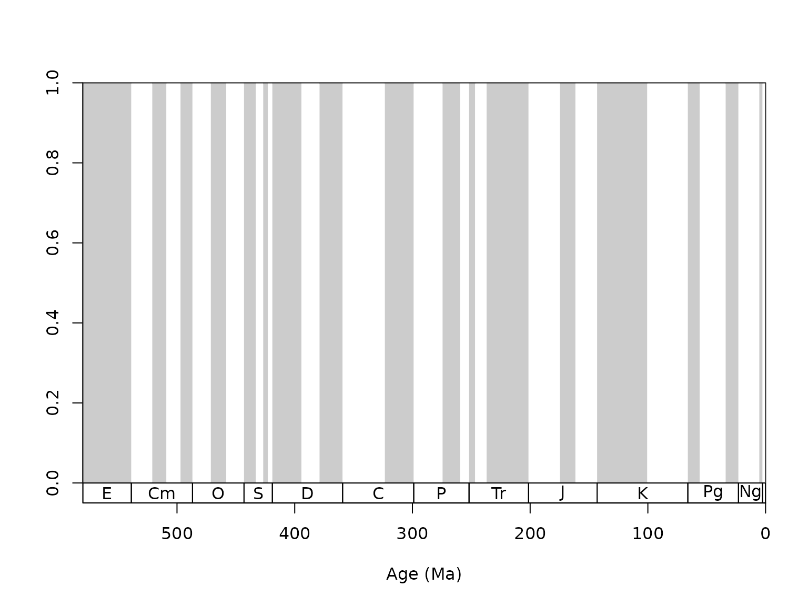
For easier navigation in the plot, the time dimension can be indicated with three variables: the radiometric dates that serve as coordinates; boxes of intervals under lowest ylim value of the plot; and vertical shades over the plotting area. The time scale to be plotted can be altered by changing the values of the main argument tsdat and by providing the appropriate column names for the boxes and shading arguments. In order to use the system (period) names as labels and the stages as shades, just change the function input accordingly (the xlim values will limit the x axis plot):
tsplot(stages, boxes="system", shading="stage", xlim=59:81)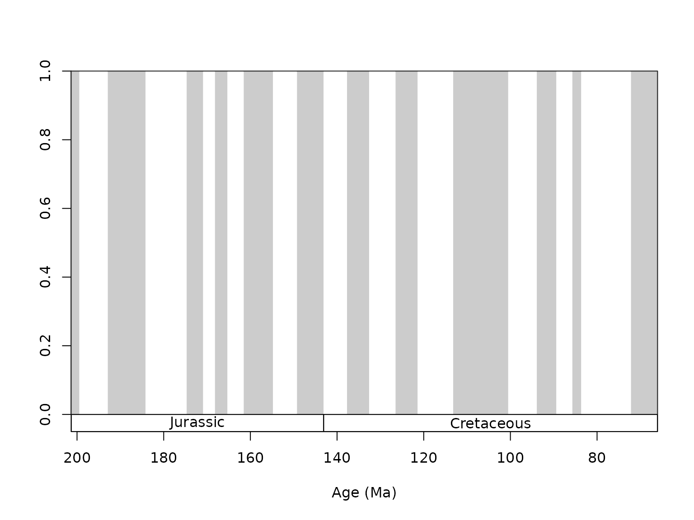
The function was designed to enable the highest level of customization. You can customize the distribution of plotting area with the xlim (accepts exact ages and sequences of bins, see the examples), ylim, prop and gap arguments, and the color of the shading. You can also customize the characteristics of the general plotting (calling plot(), the boxes of time slices (calling rect()) and the labels within them (calling the text() function). You can directly control the arguments of these functions that tsplot() uses to draw the elements of the timescale by adding the additional arguments as lists to the plot.args, boxes.args and labels.args arguments.
For instance, if you want your boxes to feature red italic fonts as labels, just add col=“red”, and font=3 the way you would regularly use them with the text() function, but wrap them up in a list, and assign it to the ‘labels.args’ argument:
tsplot(stages, boxes="sys", shading="series",
labels.args=list(col="red", font=3), shading.col=c("white", "wheat"))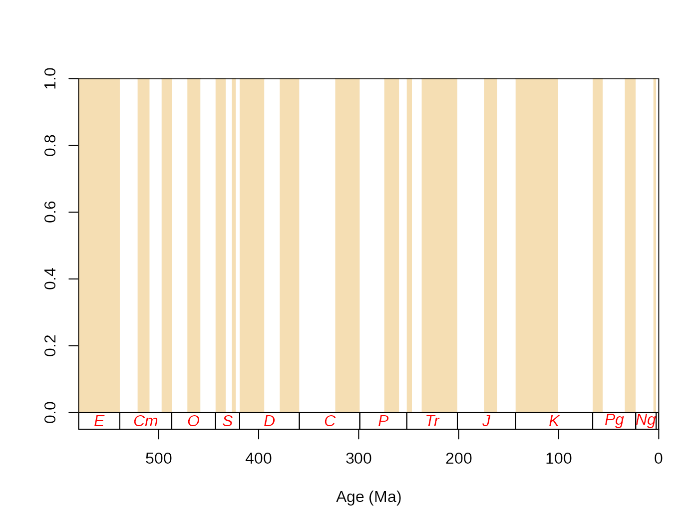
Although you can set it manually with the boxes.args argument, the time scale plotting function also features colored plotting of the boxes, via the argument boxes.col. The stages object contains hexadecimal RGB codes for the system (period), series (epoch) and stage (age) entries of the ICS table of stratigraphy in the systemCol, seriesCol and col columns, respectively.
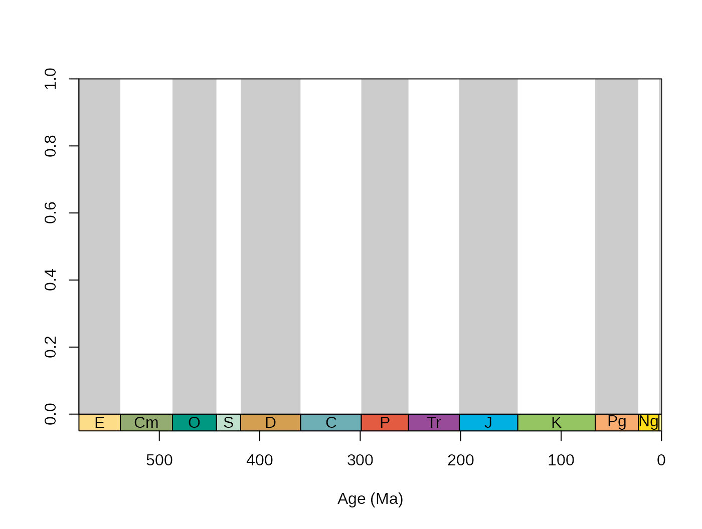
Plotting of multiple levels as boxes is also supported now. Use vectors of column names if you want to add these.
tsplot(stages, boxes=c("short","system"), shading="short",
xlim=59:69, boxes.col=c("col","systemCol"), labels.args=list(cex=0.5))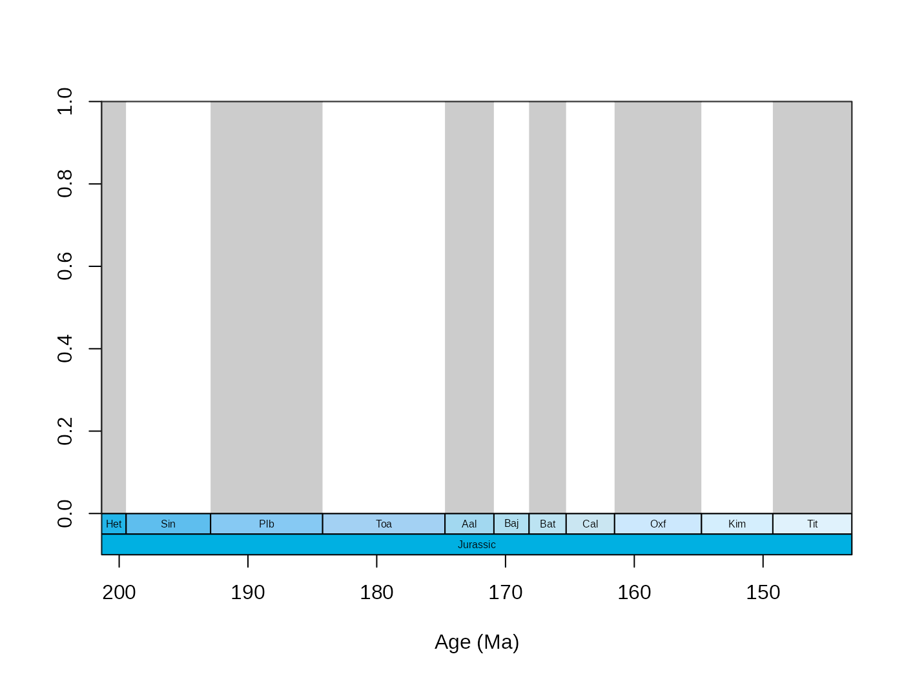 Accordingly, the boxes.args and labels.args accept hierarchical input that corresponds to the levels of stratigraphic hierarchy.
tsplot(stages, boxes=c("short","system"), shading="short",
xlim=59:69, boxes.col=c("col","systemCol"),
labels.args=list(list(cex=0.5),list(cex=1)),
boxes.args=list(list(),list(density=80)))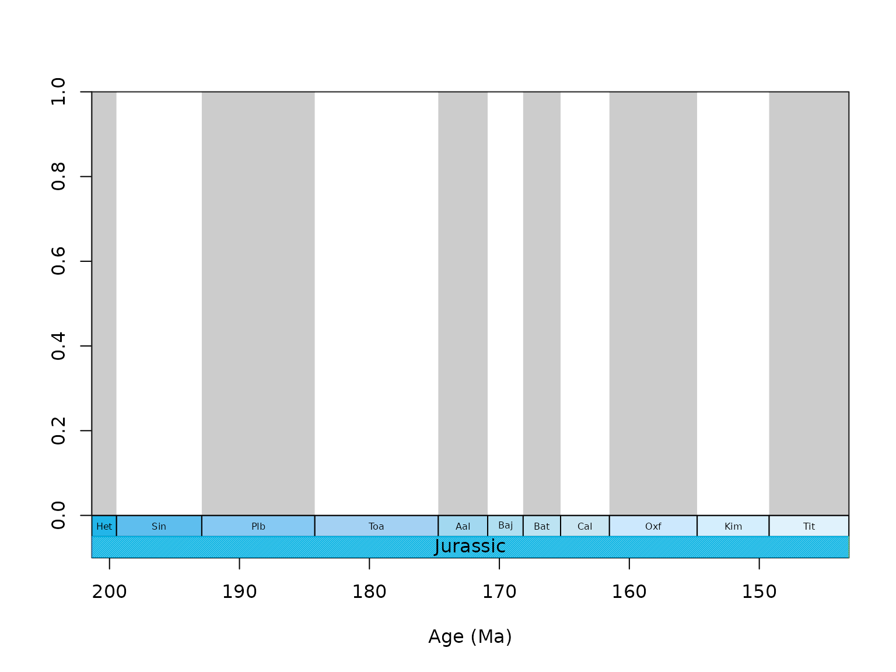 Naturally, you can use other time scale plotting packages such as the ‘geoscale’ package developed by J. Bell (2015). These work great for Phanerozoic scale analyses, but be sure to check the compatibility of the time scale you use for the binning and the time scale used for plotting. As we have experience with problems that stemmed from the incompatibility of analyzing and plotting data, we recommend using your own timescale for plotting.
2.2. Occurrence table
The occurrence tables contain unary information about the presence of a taxon at a specified locality (can be global). In these tables, each occurrence is represented by a row which has to include a name of the taxon. This data format is similar to the following example:
## tax bin locality
## 1 Sp1 1 first
## 2 Sp1 1 second
## 3 Sp1 2 second
## 4 Sp2 2 second
## 5 Sp3 2 first
## 6 Sp2 3 secondThe functions of the package will have to be pointed to this column, by specifying its name in the tax argument of the function in question. Additional variables can be added that contain specific information about the time and locality of the occurrence, as well as other variables that help with grouping the individual entries (taxon/collection information). The utility of this long format is in its unbounded nature, with the acquisition of newer data points the time and spatial coverage of the dataset can extend without problems.
2.2.1. Stratigraphic assignment
Most functions rely on processes that subset the data to contain occurrences that represent the same time interval. This column can be specified with setting the bin argument accordingly. However, to get this column, a number of processes has to be run on the raw data. Although the package already incorporates functions and data to assign downloaded occurrences to stratigraphic bins, those are illustrated in a separate vignette (http://github.com/divDyn/ddPhanero).
2.2.2. The example file
In order to demonstrate most capabilities of the package we have added a fossil occurrence table of Scleractinian corals that we used in an earlier study (Kiessling and Kocsis, 2015). This subset was downloaded from the PaleoDB and was extended with information on inferred photosymbiotic status, growth types, degree of integration, ecological environment, inferred depth, substrate lithology and latitudinal groups. Additional details are available by typing ?corals to the console. This dataset is embedded in the package and can be attached using the data() function:
data(corals)This dataset was resolved to the 10 my timescale of the PaleoDB (ten, now only available through FossilWorks) and the stage-level time scale (variable stg) that is included in the package (see Section 2.1, stages). This latter is the basis of all inference and plotting. The values of the stg column of the coral table refers to entries in the num column of the stages table. Please note that this dataset does not include Holocene occurrences. The occurrences designated with stg==95 are just single entries that include extant genera; therefore all other entries of this subset are missing, except for the variables linked to the taxa. The rest of the occurrences represent actual fossils.
fossils <- corals[corals$stg!=95,]
# the number of occurrences
nrow(fossils)## [1] 295443. Basic patterns
3.1. Ranges
We can gain preliminary knowledge by examining the basic patterns of the stratigraphic ranges . Probably the most apparent of these are the stratigraphic ranges of the taxa, which can be easily summarized in the FAD-LAD matrix:
fl <- fadlad(fossils, bin="stg", tax="genus")You can also use the occurrences’ own age estimate to calculate the ranges, just type in ?fadlad to see some more examples. The ranges of fossil taxa are the primary data quality feedback we can have from the massive amount of fossil occurrences. You can easilly visualize these with the ranges() function. To keep things simple, just assign the age (stage) mean age to the occurrences:
fossils$mid <- stages$mid[fossils$stg]
tsplot(stages, shading="series", boxes="sys",xlim=c(260,0))
ranges(fossils, tax="genus", bin="mid")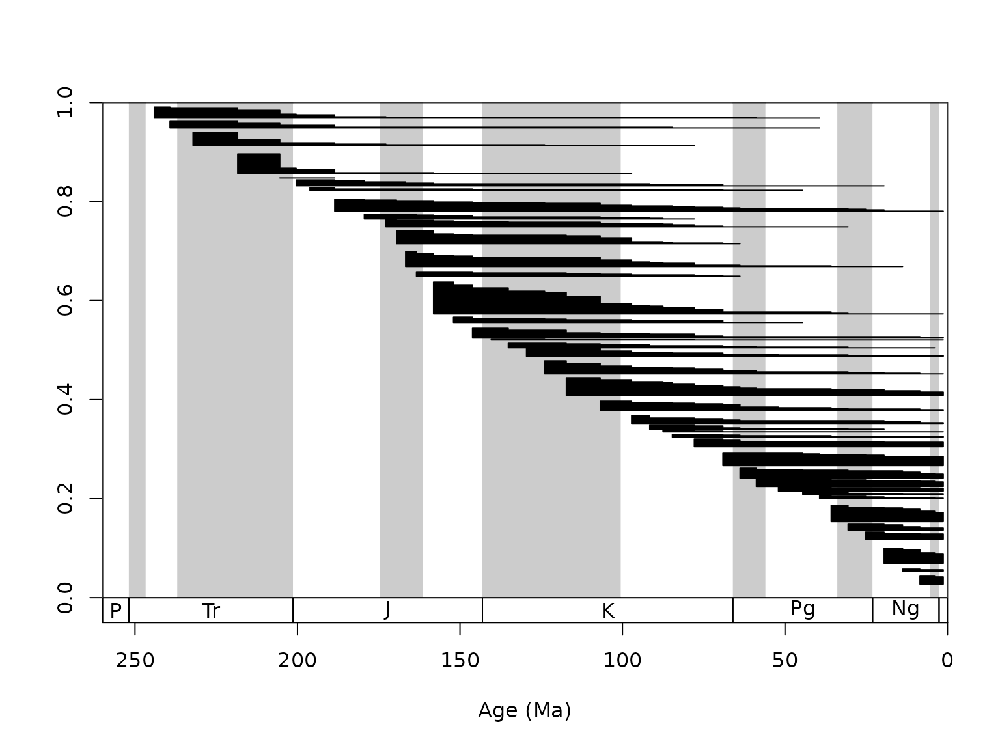
The function automatically selects the taxa that have ranges that fall into the xlim values of the open device (you can suppress this if you want to). If you zoom in with the main plotting function, you can see this effect. You can also add the taxon labels by setting the labs argument to TRUE.
tsplot(stages, shading="series", boxes="series",xlim=c(100,81))
ranges(fossils, tax="genus", bin="mid", labs=T, labels.args=list(cex=0.2))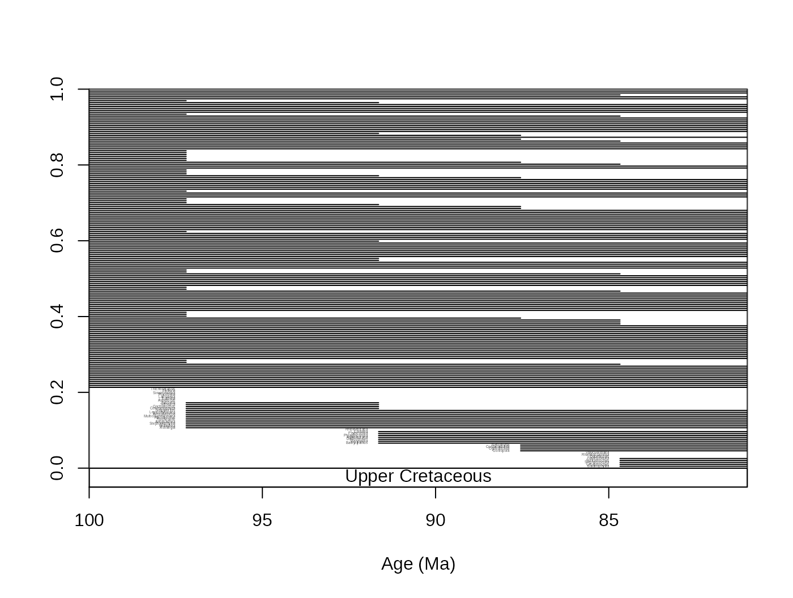
As you can see from the example above (labs.args argument), the argumentation of this function works in a similar way to the that of the tsplot() function. You can get an even more detailed look if you set the filt argument to "orig". This will limit the displayed taxa to those that originated within the interval. occs=TRUE will also plot the sampled occurrences on the ranges.
tsplot(stages, shading="stage", boxes=c("stage","series"),xlim=c(100,80))
ranges(fossils, tax="genus", bin="mid", labs=T,
labels.args=list(cex=0.6), filt="orig", occs=T)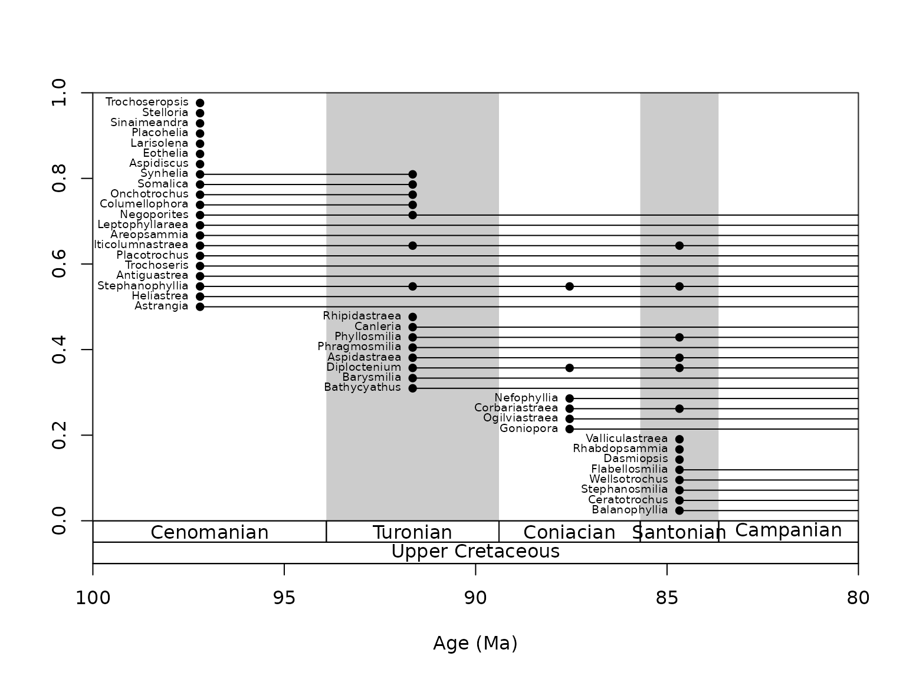
This function can also plot the taxa by groups. Here is the same plot, but by separating the taxa based on symbiotic status:
tsplot(stages, shading="stage", boxes=c("stage","series"),xlim=c(100,80))
ranges(fossils, tax="genus", bin="mid", labs=T,
labels.args=list(cex=0.6), filt="orig", occs=T, group="ecology")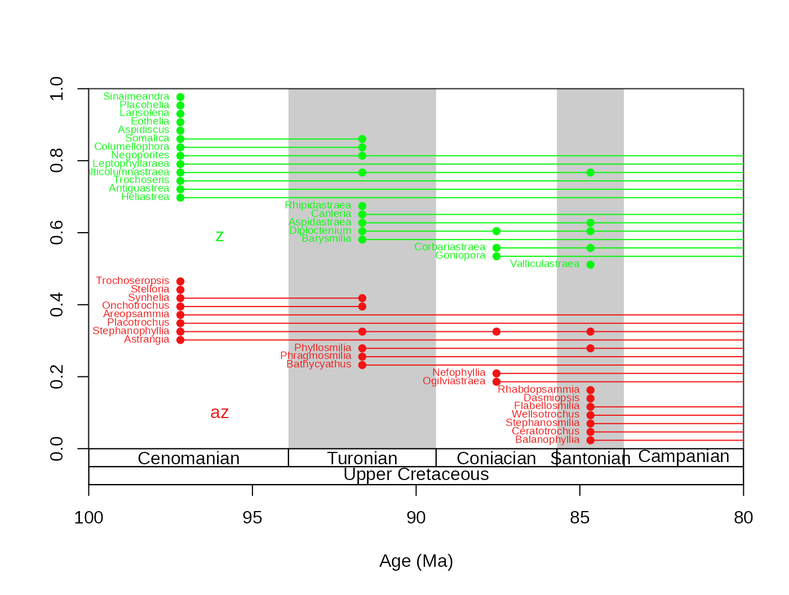
You can also plot survivorship curves. The function survivors() calculates the proportions of survivors from every bin to all the remaining bins.
surv <- survivors(corals, bin="stg", tax="genus")You can plot these values for every cohort to get survivorship curves. As these curves can be thought of as products of an exponential decay, it is customary to log the y axis, which you can do with adding log="y" to the arguments of the main plot() function in plot.args:
# time scale plot
tsplot(stages, shading="series", boxes="sys",
xlim=c(260,0), ylab="proportion of survivors present",
ylim=c(0.01,1),plot.args=list(log="y"))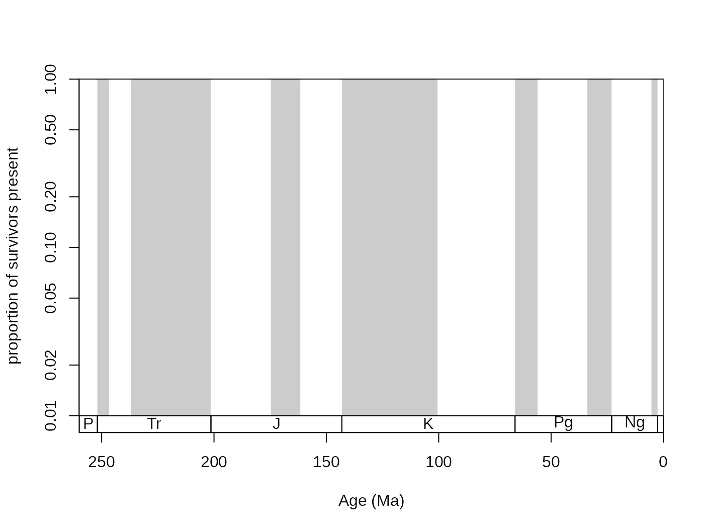
Then the curves can be plotted for every column with
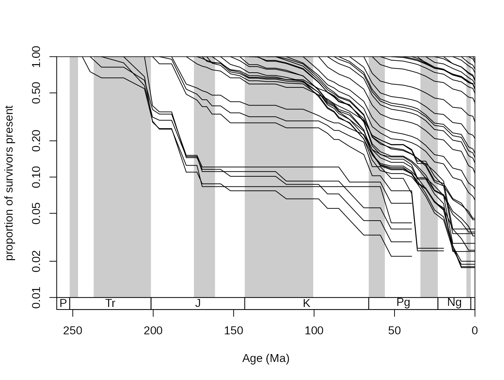
The values shown here are also called ‘forward’ survivorship proportions, but you can also plot the ‘backward’ survivorships to see how certain cohorts emerge over geologic time, by setting the method argument of the survivors() function appropriately:
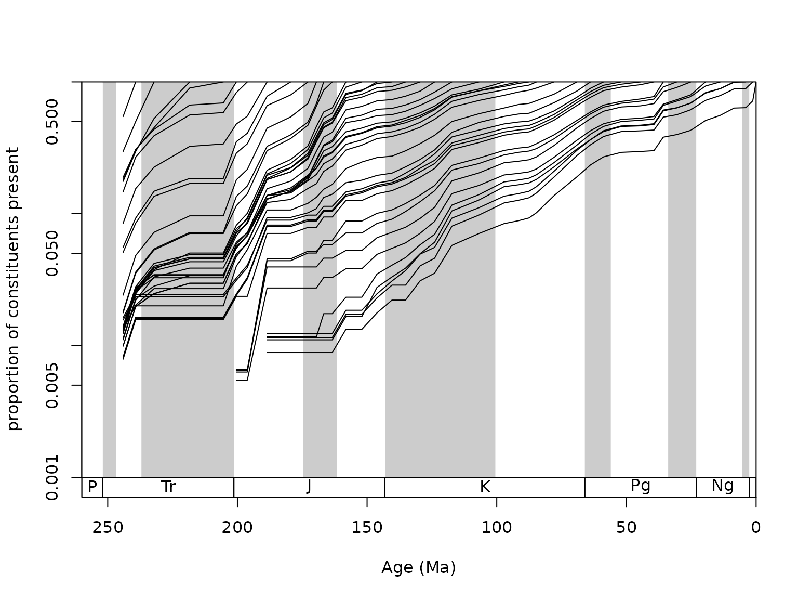
Large synchronous changes in these curves represent times where major changes happened in the history of the group. Major extinctions are apparent on the forward survivorship, whilst major origination episodes show up on the backward survivorship curves. However, ways that are more robust exist to quantify the factors that influence diversity.
3.2. Sampling parameters
3.2.1. Basic descriptors
The patterns of the data are constrained by sampling processes. These can have a direct influence on the patterns of diversity dynamics and therefore should be taken into consideration when the conclusions are drawn from the data.
The sumstat() function calculates basic sampling metrics that characterize the entire dataset.
samp <-sumstat(fossils, tax="genus", bin="stg",
coll="collection_no", ref="reference_no", duplicates=FALSE)
samp## bins occs taxa colls refs gappiness
## 1 41 23229 760 5444 1203 0.5818335This includes the total number of occurrences, collections, references and statistics of gappiness. You can also calculate most of these basic sampling metrics for every bin with the binstat() function.
samp <-binstat(fossils, tax="genus", bin="stg",
coll="collection_no", ref="reference_no")## The database contains duplicate occurrences (multiple species/genus).The message above indicates that multiple entries of the same genus are present in the same collections. As this is a species-level occurrence dataset, this is understandable. By default, these entries are omitted from the calculations above, but you can toggle this manually by setting the duplicates argument of binstat() accordingly (TRUE will keep the duplicates, FALSE will omit them – without notification).
The function calculates the basic bin-wise statistics that do not require multi-bin pattern recognition (for instance for Alroy’s (2008) three-timer sampling completeness, which is output by the divDyn() function). Optionally, additional metrics implemented in the indices() function can be applied to information in every bin, by adding indices=TRUE to the function call.
samp <-binstat(fossils, tax="genus", bin="stg",
coll="collection_no", ref="reference_no", indices=TRUE)## The database contains duplicate occurrences (multiple species/genus).
colnames(samp)## [1] "stg" "occs" "colls" "refs" "SIBs" "occ1"
## [7] "occ2" "ref1" "ref2" "u" "chao1occ" "uPrime"
## [13] "chao1ref" "richness" "shannon" "hill2" "dominance" "squares"
## [19] "chao2" "SCOR"All results of the output of this function can be plotted then in a straightforward way, by referring to the elements of the data frame. For instance, the occs element contains the number of sampled occurrences and coll refers to the number of collections:
oldPar <- par(mar=c(4,4,2,4))
# basic plot
tsplot(stages, shading="series", boxes="sys", xlim=52:95,
ylab="number of occurrences", ylim=c(0,3000))
lines(stages$mid[1:94], samp$occs)
# the collections (rescaled, other axis)
lines(stages$mid[1:94], samp$colls*5, col="blue")
axis(4, col="blue",col.ticks="blue",col.axis="blue",
at=seq(0,3000,500), labels=seq(0,600,100))
mtext(4, text="number of collections", col="blue", line=2)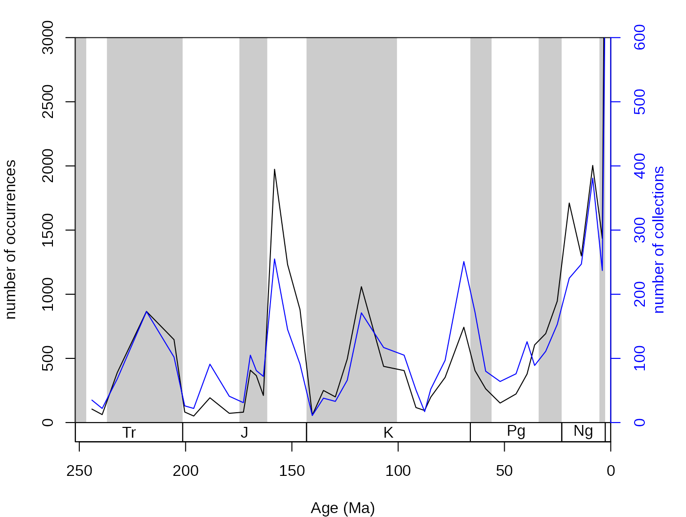
par(oldPar)The binstat() function also calculates other basic statistics such as the numbers of references, sampled taxa, single-collection taxa, single-reference taxa, double collection and double reference taxa along with the sampling coverage estimator Good’s u (1953), the coverage estimator suggested by Alroy (u’ , 2010) that is based on the number of single-reference taxa.
3.2.2. Plotting of counts and proportions
You can trace the trajectory of the occurrences that have different attributes through the bins by using the parts() function. This requires only two arguments: vector of bin identifiers and a vector that contains the categories entries. The bin identifier also determines the coordinates along the independent variable (time), so the numerical bin entries have to be replaced by the age estimates.
# numerical ages, as bins
fossils$stgMid <- stages$mid[fossils$stg]
#plotting
tsplot(stages, shading="series", boxes="sys", xlim=52:95,
ylab="number of occurences", ylim=c(0,3000))
parts(fossils$stgMid, fossils$bath)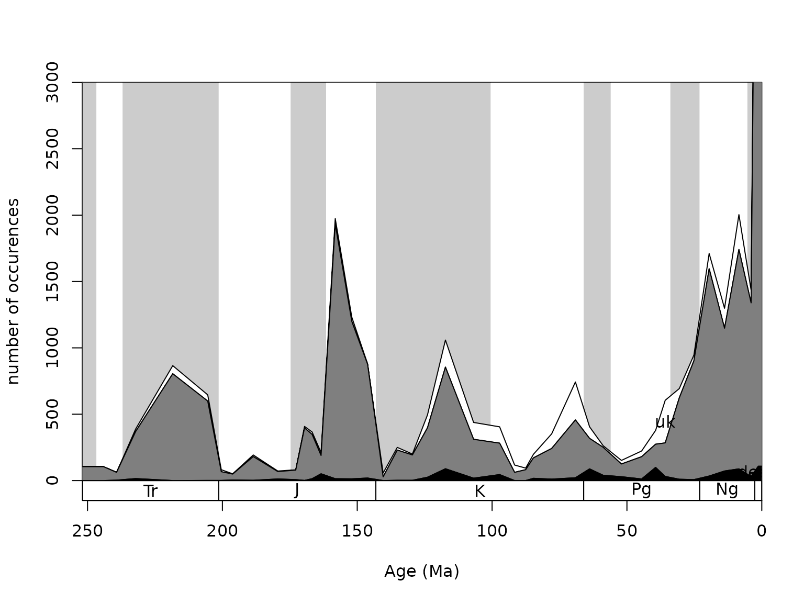
If you check out ?parts, there will be additional examples using artificial data. In the default case, the category names are plotted where they are the most abundant. This plot can be even nicer if you use opacity (RGBA values for colors) and adding a proper legend.
cols <- c("#FF0000AA", "#00FF00AA", "#0000FFAA")
# reorder too
reord <- c("shal","deep","uk")
plotnames <-c("shallow", "deep", "unknown")
tsplot(stages, shading="series", boxes="sys", xlim=52:95,
ylab="the number of occurrences", ylim=c(0,3000))
parts(fossils$stgMid, fossils$bath, col=cols, ord=reord, labs=F)
legend("topleft", inset=c(0.01, 0.01),
legend= plotnames, fill=cols, bg="white")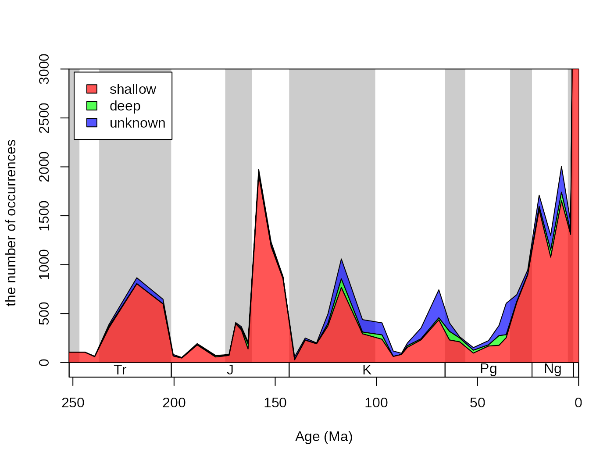
The dominance of shallow occurrences are even more apparent with proportions. You can use the parts function to plot these, rather than the counts, by adding prop=T to the function call:
tsplot(stages, shading="series", boxes="sys", xlim=52:95,
ylab="proportion of occurrences", ylim=c(0,1))
parts(fossils$stgMid, fossils$bath, prop=T, col=cols, ord=reord, labs=F)
legend("bottomleft", inset=c(0.01, 0.1),
legend= plotnames, fill=cols, bg="white")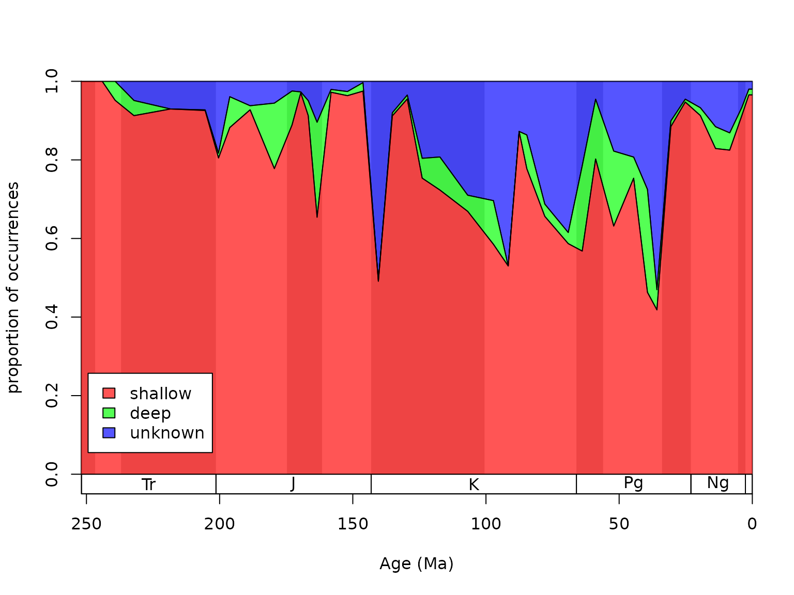
3.2.3. Single-collection and single reference taxa
Single-interval taxa were thought to be byproducts of temporary increases of sampling intensity (Foote and Raup, 1996) in range-based datasets such as Sepkoski’s compendium (2002). This phenomenon urged researchers to develop metrics that ignore these taxa in calculating metrics of biodiversity and evolution. Single-collection taxa can be quickly omitted from the datasets by using the omit() function. This will return a logical vector, indicating the rows that should be omitted. The om argument can be set either to omit the single-collection occurrences (om="coll"). Single-reference taxa can be omitted in the same way, although the term needs additional clarification if multiple bins exist. Taxa that were only described in a single reference (om="ref"). Some taxa appear in multiple bins and in each of them they are described by only one reference. These you can omit with om="binref".
omitColl <- omit(corals, tax="genus", om="coll", coll="collection_no")
omitRef <- omit(corals, tax="genus", om="ref", ref="reference_no")
omitBinref <- omit(corals, bin="stg", tax="genus", om="binref", ref="reference_no")
# the conserved number of occurrences will be
sum(!omitColl)## [1] 29583
sum(!omitRef)## [1] 29489
sum(!omitBinref)## [1] 291054. Raw diversity dynamics
The main calculations of the package are contained in the divDyn() function. This function calculates patterns of taxon occurrences and stratigraphic ranges to derive estimates over time for richness, origination/extinction rates and sampling probabilities. In order to calculate these you only need an occurrence table with variables including the taxon names (tax) and the time identifiers (bin). The rest of the information in the table will not be used by the function.
ddFirst<-divDyn(corals, bin="stg", tax="genus", noNAStart=TRUE)The output of the divDyn() function is a data.frame class object that contains values for each bins in rows. The first column (bin variable) contains the bin identifiers. The rest of the variables are explained in the documentation.
4.1. Diversity (taxonomic richness) with discrete time input
You read this because you have interests in the changes of diversity. Calculating time series of diversity does not require additional action than running the basic divDyn() function.
4.1.1.Taxon counts
All calculations in this function depend on patterns of occurrences in the bin/taxon matrix. The numbers of taxa that belong to different categories form the basis of the metrics. These categories are explained by Foote (1999) and Alroy (2014) and are available in the help file ?divDyn.
4.1.2. Different metrics of richness
Calculating time series of diversity does not require additional action than running the basic divDyn() function. In this package, among the traditional range-based methods the range-through (variable divRT) and the boundary-crosser (divBC) diversities are implemented. Plotting can be also facilitated by matching the indices of the diversity values in the variables and their numbers. If the bin numbers are positive integers this is turned on by setting the noNAStart argument to FALSE, which is the default. This change results in NAs and zeros in the final table in rows, which bins are not sampled.
# metrics
ddRec <-divDyn(corals, bin="stg", tax="genus")
# basic plot
tsplot(stages, shading="series", boxes="sys", xlim=52:95,
ylab="range-through richness (diversity)", ylim=c(0,250))
# lines
lines(stages$mid, ddRec$divRT, col="black", lwd=2)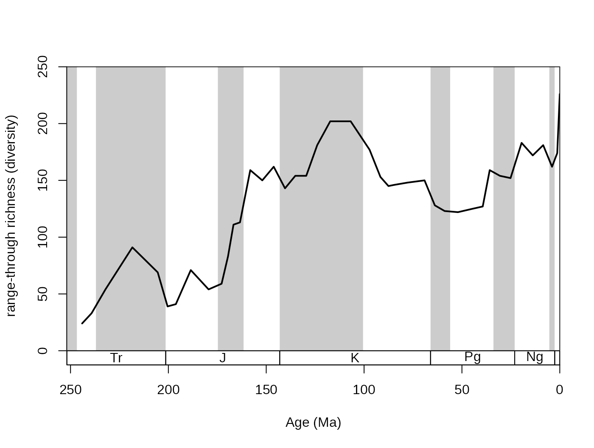
This plot shows the trajectory of coral diversity over the post-Permian interval, using raw data and the range-through diversity metric. Besides the 0 values at the start of the time series (no sampled corals), you might also notice a sharp increase of richness in the latest intervals. This could be the result of an effect called the ‘Pull of the Recent’. The ‘Pull of the Recent’ (Raup, 1979) is a smearing phenomenon that arises when range-based methods are calculated from datasets where sampling probability changes abruptly. As we know the Recent much better in comparison to other intervals (sampling probability is much higher, around one), the number of ranges that connect first occurrences of taxa to the extant time interval (stg == 95) is much higher than those that link two non-Recent time intervals. The results in spur of diversity as the Recent is approached. On the other hand, omitting the recent interval (effectively decreasing sampling probability to 0) leads to edge effects that result in the opposite phenomenon. The discrepancy between these two approaches can be visualized by the omission of the recent ‘occurrences’:
# metrics
dd <-divDyn(fossils, bin="stg", tax="genus")
# basic plot
tsplot(stages, shading="series", boxes="sys", xlim=52:95,
ylab="richness (diversity)", ylim=c(0,250))
# lines
lines(stages$mid, ddRec$divRT, col="black", lwd=2)
lines(stages$mid[1:94], dd$divRT, col="blue", lwd=2)
# legend
legend("topleft", legend=c("with recent", "without recent"), col=c("black", "blue"), lwd=c(2,2), bg="white")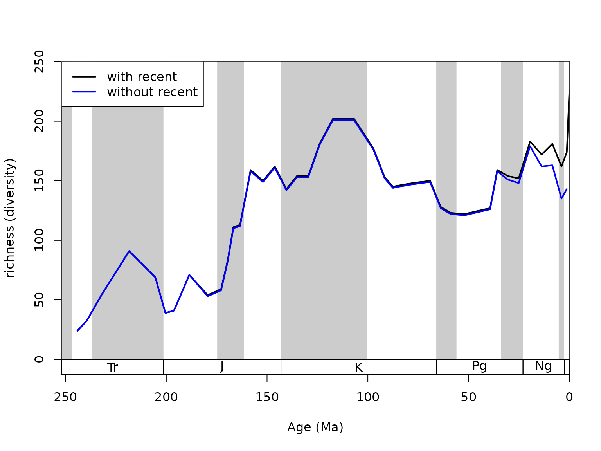
Over the last couple of decades, a number of metrics were proposed to efficiently express diversity given such distorting effects of incomplete sampling and the discretized time dimension. As these more straightforward approaches that use range interpolations have known issues, occurrence datasets, allow the calculation of more direct estimators, such as sampled-in-bin (SIB, variable divSIB) diversities.
# metrics
dd <-divDyn(fossils, bin="stg", tax="genus")
# basic plot
tsplot(stages, shading="series", boxes="sys", xlim=52:95,
ylab="richness (diversity)", ylim=c(0,250))
# lines
lines(stages$mid[1:94], dd$divRT, col="red", lwd=2)
lines(stages$mid[1:94], dd$divBC, col="blue", lwd=2)
lines(stages$mid[1:94], dd$divSIB, col="green", lwd=2)
# legend
legend("topleft", legend=c("RT", "BC", "SIB"),
col=c("red", "blue", "green"), lwd=c(2,2,2), bg="white")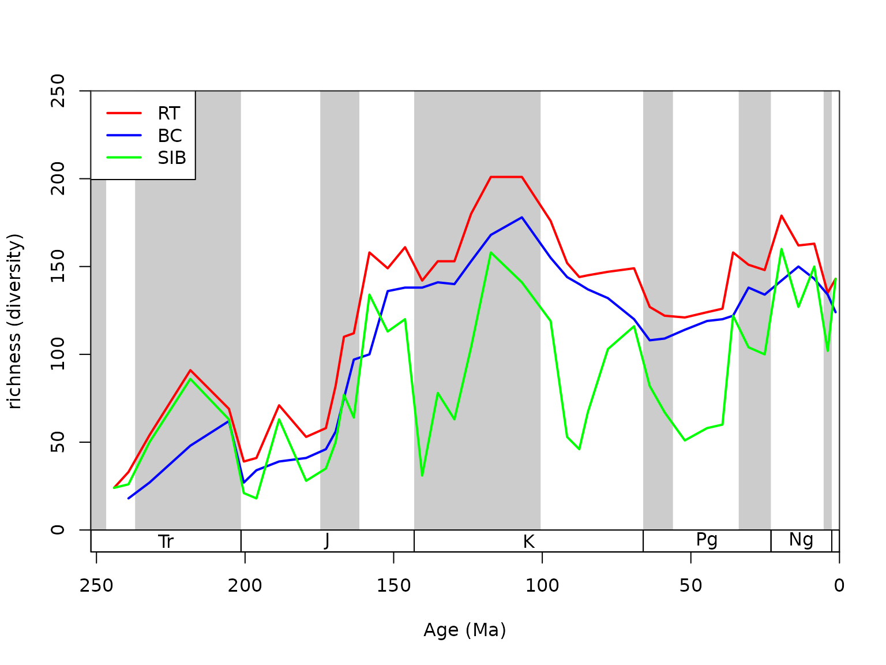
Although range-interpolation does not bias the ‘SIB’ metric, it is more affected by changes of sampling intensity sampling. The three-timer sampling completeness is an effective expression of changes in sampling (samp3t variable):
# basic plot
tsplot(stages, shading="series", boxes="sys", xlim=52:95,
ylab="three-timer sampling completeness")
# lines
lines(stages$mid[1:94], dd$samp3t, col="black", lwd=2)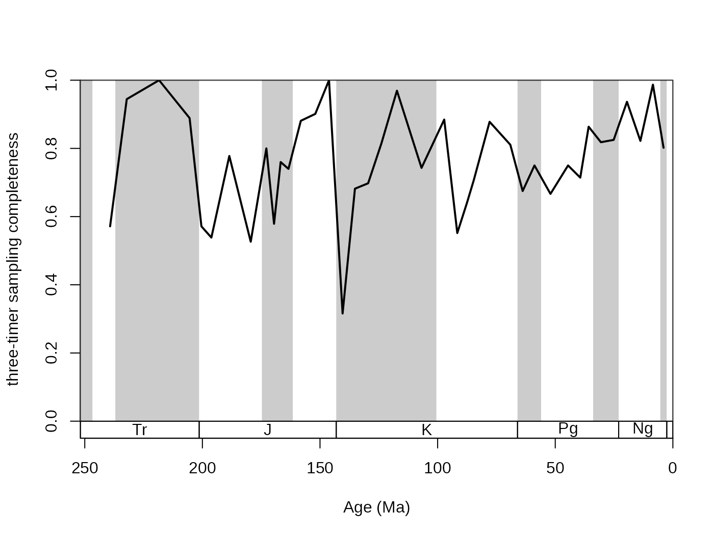
The SIB series can be partially corrected by the three-timer sampling-completeness (Alroy §ref ). Although this can be a convenient correction it also increases the estimation error. Nevertheless, this is the least biased estimator for diversity.
# basic plot
tsplot(stages, shading="series", boxes="sys", xlim=52:95,
ylab="three-timer sampling completeness", ylim=c(0,250))
lines(stages$mid[1:94], dd$divSIB, col="black", lwd=2)
lines(stages$mid[1:94], dd$divCSIB, col="blue", lwd=2)
# legend
legend("topleft", legend=c("SIB", "corrected SIB" ),
col=c("black", "blue"), lwd=c(2,2), bg="white")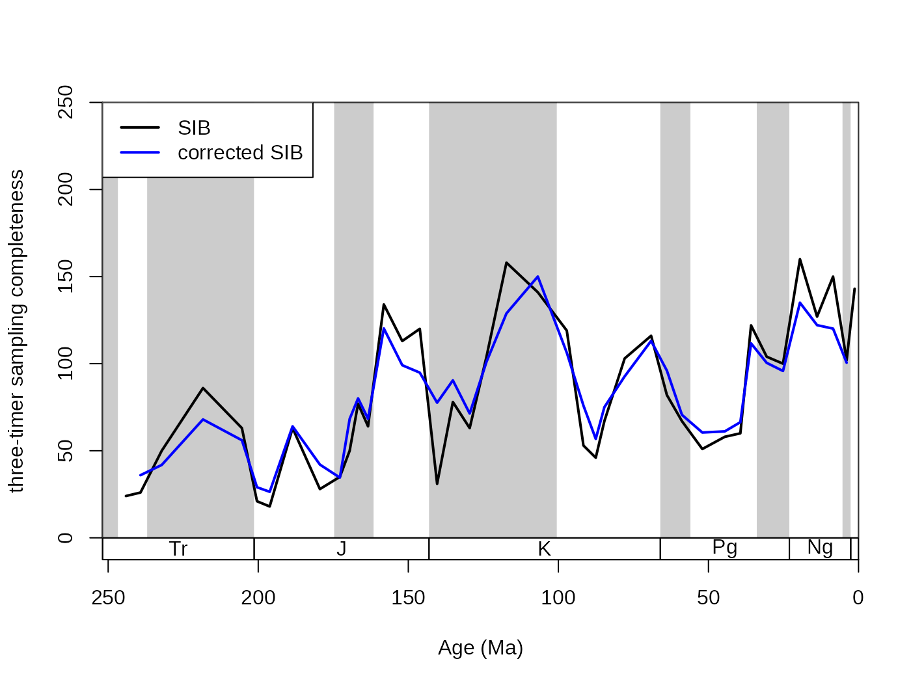 The omit() function is also embedded in the divDyn() function, so that the metrics are calculated after the omission of poorly sampled taxa (switched off by default). You can add this filter, by adding (the appropriate om arguments to the divDyn() function call.
4.2. Taxonomic rates with discrete time input
Analyzing time series of originations and extinctions helps us to describe not just how diversity changed over time, by also why it changed. With taxonomic rates we can decompose changes in diversity to the relative contribution of cladogenetic processes (i.e. origination, the birth of a new taxon) and that of the disappearance of taxa (i.e. extinction, the death of a taxon). In the discrete time model, the most straightforward way to express these contributions is through simple exponential decay models (Raup, 1985). For convenience, these variables are named as extTYPE and oriTYPE for extinction and origination rates, respectively.
4.2.1. Different metrics of turnover
In the package, the proportional rates (extProp and oriProp) and per capita rates (extPC and oriPC) of Foote (1999), the three-timer rates (ext3t and ori3t) of Alroy (2008), their corrected counterparts (extC3t and oriC3t), the gap-filler rates (extGF and oriGF) of Alroy (2014) and the improved second-for-third (ext2f3 and ori2f3) of Alroy (2015) are provided.
# basic plot
tsplot(stages, shading="series", boxes="sys", xlim=52:95,
ylab="extinction rates", ylim=c(0,2))
lines(stages$mid[1:94], dd$extPC, col="black", lwd=2)
lines(stages$mid[1:94], dd$extGF, col="blue", lwd=2)
lines(stages$mid[1:94], dd$ext2f3, col="green", lwd=2)
# legend
legend("topright", legend=c("per capita", "gap-filler", "second-for-third"),
col=c("black", "blue", "green"), lwd=c(2,2,2), bg="white")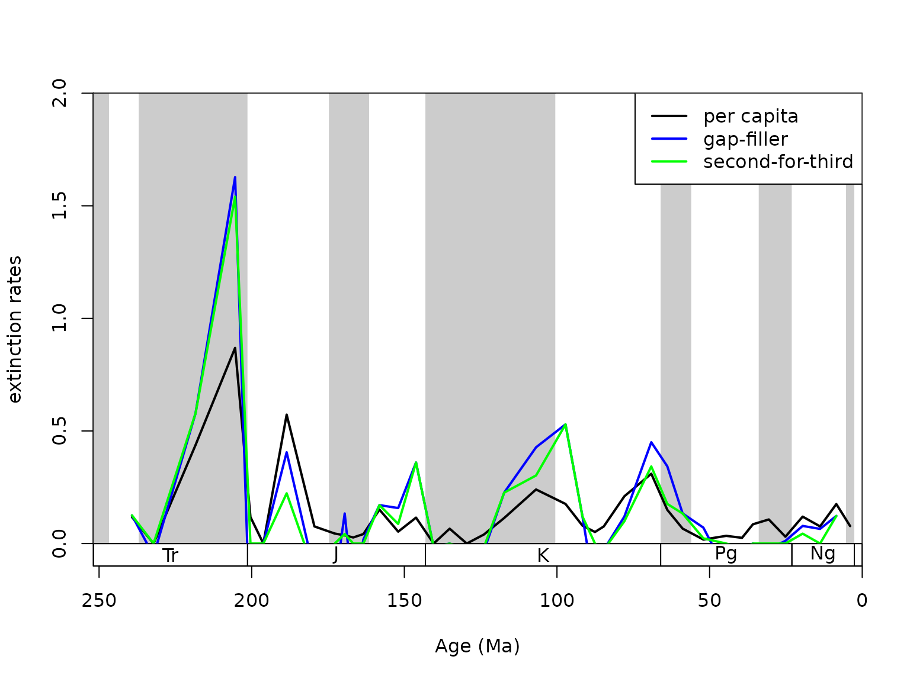
The documentation of the function (type in console ?divDyn) contains the formulas for the calculation of the rates. With heterogeneous, incomplete sampling the metrics have different properties that can be summarized as follows:
Proportional ‘rates’: These metrics express what proportion of the cohort of taxa disappears until the new interval.
The per capita rates of Foote (1999) use the range-through assumption to establish ranges for the taxa in the dataset. The rate value expresses what proportion of the taxa decayed until the end of the interval. The method is biased by the Signor-Lipps effect and edge effects (Foote 2000).
The ‘three-timer’ and ‘corrected three-timer’ rates (Alroy, 2008) are different estimators of the per capita rates but will converge on them when sampling tends to completeness. They use moving windows around the focal interval to select data that is more relevant to the focal interval. This metric is unbiased by the Signor-Lipps and edge effects. The three-timer sampling completeness can be used to correct this metric, but it will not improve its susceptibility to random sampling error.
The ‘gap-filler’ rates (Alroy, 2014): gap-filler extinction rates are improved versions of the three-timer rates, using four-bin moving windows instead of three. This makes the rates less resistant to random error (more taxa are recognized by the categorizing procedure) and are an improvement on the three-timer rates. The method sometimes results in the seemingly nonsensical negative extinction rates, when the true extinction rates are near 0.
The ‘second-for-third’ rates (Alroy, 2015) are further improvement of ideas the three-timer and gap-filler rates represent. By adding an algorithmic approach the frequency of negative extinction rates are further decreased. Extinction and origination proportions described by Alroy (2015) can also be used (
E2f3andO2f3, respectively).
4.2.2. Selectivity testing for the per capita rates
Although extinction and origination rates can provide information about events and background processes on their own, sometimes it is more useful to assess them in comparison between taxa. The most frequent way of doing this is by splitting a group to subsets and comparing the patterns of turnover in certain intervals between the two groups. In the case of selectivity testing, an ecologically, taxonomically important grouping variable indicates that one of the groups has a higher turnover at a specific point in time. For the sake of convenience in hypothesis testing for selectivity for one state of the variable (e.g. heavily calcified), the available methods assess selectivity between two groups.
The general problem of extinction selectivity is the error estimation of the rate values. More data (e.g. more taxa) will lead to more reliable estimates while, splitting the same dataset to two subsets will lead to higher uncertainty in the rate estimates for the two rate values in the selected interval. The selectivity testing incorporates two aspects: (1) the difference between the two rate values, (2) and whether this distance is meaningful or not. In practice, these two criteria can be summarized by whether it is more supported by the data to describe two rate values, or is it better founded to describe just one. These two alternatives are sometimes called as single-rate model and the dual-rate model (Kiessling and Simpson, 2011; Kiessling and Kocsis, 2015). In the case that a dual rate model is better supported, that means that the difference between the two values of rates is statistically meaningful, and the extinction or origination event selectively affected the group with the higher value. For example, here are the raw origination rates of corals, plotted for the az and the z group separately and together:
# split by ecology (az = azooxanthellate, z = zooxantehllate)
z<- fossils[fossils$ecology=="z",]
az<- fossils[fossils$ecology=="az",]
# calculate diversity dynamics
ddZ<-divDyn(z, tax="genus", bin="stg")
ddAZ<-divDyn(az, tax="genus", bin="stg")
# origination rate plot
tsplot(stages, boxes="sys", shading="series", xlim=54:95,
ylab="raw per capita originations")
lines(stages$mid[1:94], dd$oriPC, lwd=2, lty=1, col="black")
lines(stages$mid[1:94], ddZ$oriPC, lwd=2, lty=1, col="blue")
lines(stages$mid[1:94], ddAZ$oriPC, lwd=2, lty=2, col="red")
legend("topright", inset=c(0.1,0.1), legend=c("total", "z", "az"),
lwd=2, lty=c(1,1,2), col=c("black", "blue", "red"), bg="white")
The question that arises in this case is whether some intervals can be characterized by actually higher origination rates (for az taxa in the Cretaceous), or is this just a sampling artifact. The testing framework is implemented currently only for the per capita extinction rates of Foote (1999) in the ratesplit function. The function will take the occurrence dataset as an argument and will calculate the rates values similarly to the divDyn function. The function requires a separator variable for the selection testing (sel) that will be used for splitting the dataset into two (this column has to have two possible states i.e. binary code). The implementation of the process for the symbiotic status is:
rs<-ratesplit(fossils, sel="ecology", tax="genus", bin="stg")
rs## $ext
## integer(0)
##
## $ori
## [1] 57 59 75 81The default output of this function by default is a list of two vectors: ext and ori, extinction rates and origination rates, respectively. Each vector contains the bin numbers where the dual rate model is better supported than the single rate model, where selectivity is plausible. In the example above, selectivity for the extinctions is unlikely and it is supported for bin 57 (Norian), 59 (Hettangian), 75 (Albian) and 81 (Maastrichtian). The statistical testing in this case is based on the number of taxa and can be performed in two different ways, set with the method argument. The less stringent binom method implements binomial testing, with a significance value set with the alpha parameter that defaults to 0.05.
rsBin95<-ratesplit(fossils, sel="ecology", tax="genus",
bin="stg", method="binom")
rsBin95## $ext
## [1] 62
##
## $ori
## [1] 57 59 75 79 81 83 88
rsBin90<-ratesplit(fossils, sel="ecology", tax="genus",
bin="stg", method="binom", alpha=0.1)
rsBin90## $ext
## [1] 62 80
##
## $ori
## [1] 57 59 65 74 75 76 79 81 82 83 88The more conservative approach is to use model selection criteria for the testing of support for the single or dual rate models, which involves calculating Akaike Information Criteria and then Akaike weights. This is the default method (method=AIC). The alpha argument in this case depicts the minimum Akaike weight that serves as a threshold for the dual rate model to be supported. As the ratio of these weights represent likelihood ratios, by default it is set to 0.89 that roughly represents 8 times higher likelihood for the dual rate model. This can be toggled the way it is deemed useful for the question at hand.
rsAIC0.5<-ratesplit(fossils, sel="ecology", tax="genus",
bin="stg", alpha=0.5)
rsAIC0.5## $ext
## [1] 57 66 80 81
##
## $ori
## [1] 57 59 65 74 75 76 81 82 83 88 91In the case above, the 0.5 alpha value indicates that the dual rate model should be supported if it is more likely than the single rate model.
This output, listing supported intervals, is useful for plotting the selectivity values that could be easily visualized by dots. You can add these to the plot of z and az coral origination rates by running:
# select rate values in the intervals of selectivity
selIntervals<-cbind(ddZ$oriPC, ddAZ$oriPC)[rs$ori,]
# which is higher? TRUE: AZ, FALSE: Z
groupSelector<-apply(selIntervals, 1, function(x) x[1]<x[2])
# draw the points
# for the AZ corals
points(
stages$mid[rs$ori[groupSelector]],
ddAZ$oriPC[rs$ori[groupSelector]],
pch=16, col="red", cex=2)
# for the Z corals
points(
stages$mid[rs$ori[!groupSelector]],
ddZ$oriPC[rs$ori[!groupSelector]],
pch=16, col="blue", cex=2)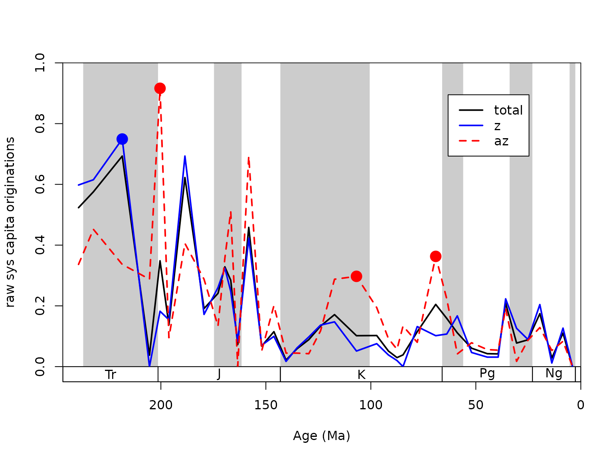 The combine method will employ both schemes for testing, but with the default alpha levels, the binomial test would not limit the set of selective intervals further than the one base on AIC.
Naturally the ratesplit() function can return the p-values of the binomial tests and the Akaike weights by setting the output argument to "full" .
4.3. Diversity dynamics with age input
The added option to use a time variable that contains real values allows users to use different data to express the passing of time. This addition enables the application of the basic function to examples of high temporal resolution, where time is close to continuous, or samples in relative time such as expressed by meters within the section.
4.3.1. Using the bin argument – unique values code intervals
In the case of the coral dataset, we can try this numerical binning approach by assigning the estimated age mid points to the occurrences. This is a very ‘dirty’ way of treating occurrence data as the assumed uncertainty of the age estimate is practically reduced to 0, and overlapping intervals that express uncertainty will have different assigned bins.
If this column is set as the bin argument, then occurrences will be treated to represent the same time interval that have the same value in this column. The entries will be ordered by the function. Similarly to physical systems time is assumed to flow from lower to larger values when it is provided as the bin argument. This means that time has to be reversed, otherwise extinctions become originations and vice versa. You can toggle this by setting revtime=TRUE.
ddIDbin <- divDyn(fossils, tax="genus", bin="mid_ma", revtime=TRUE)Please note that this is example is for illustration purposes only. As there are too many unique entries in this bin variable, with the corals, this resolution will be too high to produce potentially meaningful patterns. Range-through diversities are possibly the closest to reality with this method. With this type of binning, the first variable of the divDyn output (name specified in bin) contains the ages for the bins, which you can use for plotting.
# basic plot
tsplot(stages, shading="series", boxes="sys", xlim=52:95,
ylab="Diversity, range-through", ylim=c(0,300))
lines(ddIDbin$mid_ma, ddIDbin$divRT, col="black", lwd=2)
lines(stages$mid[1:94], dd$divRT, col="red", lwd=2)
legend("topleft", legend=c("unique mid entries", "stg stages"),
col=c("black", "red"), lwd=c(2,2), bg="white")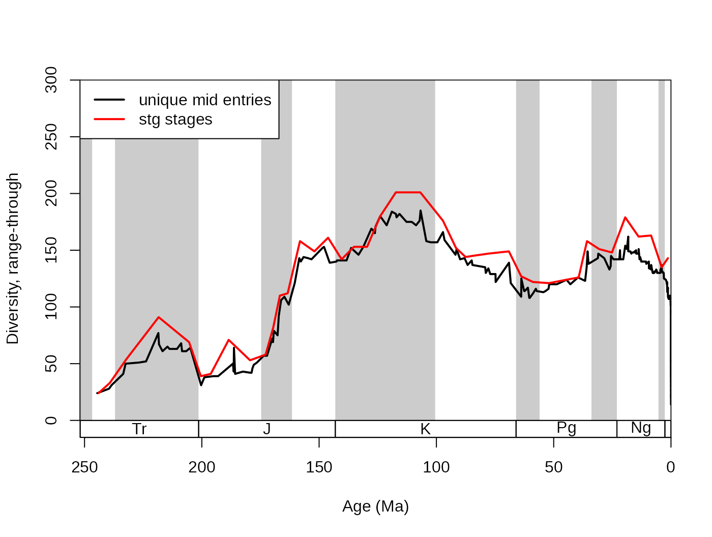
4.3.2. Slicing: slice() and the age argument of divDyn()
The term slicing refers to the discretization of continuous time. A potentially more promising solution is to assign the occurrences that go along a continuous time scale to regularly spaced bins. However, we have to keep the direction of time in mind: age values decrease as time passes by. This is achieved with the slice() function, that can also produce a time scale object, similarly to the stages data.frame. This function converts a continuous time vector to positive integers. To achieve this, you have to supply a numeric vector to the breaks argument function. The entries in this vector will represent the breakpoints or boundaries of the interval, similarly to the breaks argument of the cut() or hist() function in the base R distribution. For the sake of simplicity, let’s try a 10 million year bin resolution.
# resolve time
breakPoints <- seq(270, 0, -10)
sliTen <- slice(fossils$mid_ma, breaks=breakPoints, ts=TRUE)
str(sliTen)## List of 2
## $ slc: num [1:29544] 11 12 12 12 12 12 12 16 16 16 ...
## $ ts :'data.frame': 27 obs. of 4 variables:
## ..$ bottom: num [1:27] 270 260 250 240 230 220 210 200 190 180 ...
## ..$ mid : num [1:27] 265 255 245 235 225 215 205 195 185 175 ...
## ..$ top : num [1:27] 260 250 240 230 220 210 200 190 180 170 ...
## ..$ slc : num [1:27] 1 2 3 4 5 6 7 8 9 10 ...The first element of the output list ($slc) is the discretized version of the original vector, with reversed time: in the original vector it was flowing from higher to lower values, whereas in $slc time flows from lower to higher values. The second element is the time scale object that is synthesized from the given breaks. It also has an $slc column that reflects the connection between the age estimates and the slice numbers. This output can be used to run the divDyn() function and to visualize the results
# assign new column to the data frame
fossils$slc <- sliTen$slc
# run divDyn with the new column
auto10<-divDyn(fossils, tax="genus", bin="slc")
auto10$divRT## [1] NA NA 24 56 55 87 77 45 73 80 150 165 165 165 194 197 189 184 150
## [20] 156 165 126 124 173 165 183 177Note, that the rows of the divDyn() output are aligned with the rows of the slice() output sliTen$ts. The results are practically identical to when you do the binning automatically with the age argument of the divDyn() function.
# and calculate diversity dynamics
ddMid10<-divDyn(fossils, tax="genus", age="mid_ma", breaks=breakPoints)
ddMid10$divRT## [1] 0 0 24 56 55 87 77 45 73 80 150 165 165 165 194 197 189 184 150
## [20] 156 165 126 124 173 165 183 177In this case, the age variable of the output will contain the mid ages of the discrete intervals. Do not worry about setting the exact values for the start and end of slicing (270 and 0 in the example above). If no data occurs in the outlined bins, then the corresponding rows will be empty in the table.
# lines
lines(ddMid10$mid_ma, ddMid10$divRT, col="blue", lwd=2)
# new legend
legend("topleft", legend=c("age estimates, 10MY",
"stg stages", "unique mid entries"), col=c("blue", "red", "black"),
lwd=c(2,2,2), bg="white")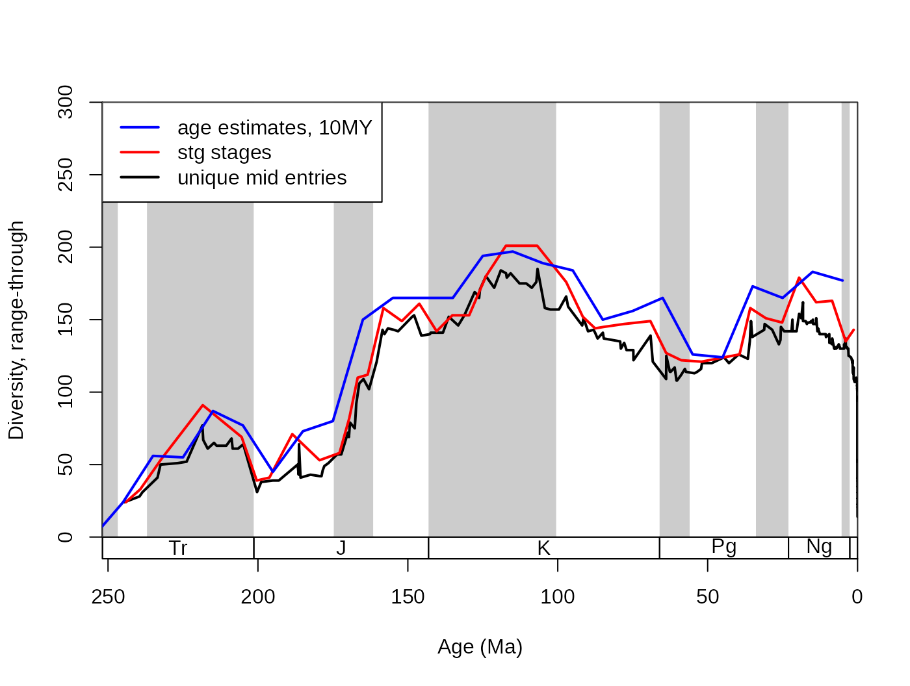
4.3.3. Summary – about slicing and the direction of time
It is better practice to use discretized time for analyses, as the nature of the data supports it better. Interval names are more conservative than age estimates that tend to vary with the evolving geologic timescale, whereas the stratigraphic positions of fossils barely change. In case you only have age estimates, I recommend to bin them separately first with the slice() function, rather than using the age argument of the divDyn() function. The integer bins can be used in any procedures, such as selectivity testing and subsampling, and you get better control over your calculations.
When time is fed to the divDyn function with its bin argument, it will assume by default that you are using discrete bins, with identifiers that increase as time passes by. On the other hand, using the age argument will assume that you use ages, with identifiers that decrease with flow of time. As the slice() function is designed to process age data, the way it handles time is similar to the age argument of the divDyn() function. You can override the default behavior in all by setting revtime=TRUE. In short: bin uses forward time, while age and slice() use backward time.
4.4. Origination and extinction dates in binary response variables
The occurrence dataset can be represented a taxon/bin matrix that taxa populate with presences or absences. Among the cells in this matrix, some mark the apparent origination or extinction dates of taxa. Two binary matrices can be outlined from this matrix: one for extinctions, and one for originations. Cells, where the taxa are assumed to be present are marked by 0s, and cells corresponding to the origination (or extinction) dates of taxa contains 1s (the rest are missing). Linearizing these matrices to binary vectors allows the application of statistical modelling techniques to infer which entries in additional variables are associated with the apparent origination and extinction events. You can transform the occurrence dataset to a data frame of such structure with the modeltab() function:
# basic function call
mtab <- modeltab(corals, tax="genus", bin="stg")
mtab[mtab[,"genus"]=="Acanthogyra",]## ori ext genus stg
## 8 TRUE FALSE Acanthogyra 67
## 9 FALSE FALSE Acanthogyra 68
## 10 FALSE FALSE Acanthogyra 69
## 11 FALSE FALSE Acanthogyra 74
## 12 FALSE TRUE Acanthogyra 75The ext variable stands for extinctions and the ori column corresponds to originations. The basic output of the function only includes rows corresponding to the time bin/taxon matrix where the taxa are sampled. However, one could argue that intervals where the taxa are assumed to be present (although they are not sampled) are legitimate observations that they do not go extinct or originate. You can add these interpolated points by setting the rt argument of the function to TRUE:
# basic function call
mtabrt <- modeltab(corals, tax="genus", bin="stg", rt=TRUE)
mtabrt[mtabrt[,"genus"]=="Acanthogyra",]## occurrence ori ext genus stg
## 8 TRUE TRUE FALSE Acanthogyra 67
## 9 TRUE FALSE FALSE Acanthogyra 68
## 10 TRUE FALSE FALSE Acanthogyra 69
## 11 FALSE FALSE FALSE Acanthogyra 70
## 12 FALSE FALSE FALSE Acanthogyra 71
## 13 FALSE FALSE FALSE Acanthogyra 72
## 14 FALSE FALSE FALSE Acanthogyra 73
## 15 TRUE FALSE FALSE Acanthogyra 74
## 16 TRUE FALSE TRUE Acanthogyra 75Interpolated “occurrences” are marked with FALSE values in the occurrence variable of the output dataset. It is important to mention that this method is vulnerable to patterns of incomplete sampling, as the rt extension of ranges only uses interpolation, but no extrapolation.
Single-interval species require separate treatment as the ext and ori response cannot be anything else but TRUE. For this reason, these taxa are omitted by the function by default (singletons=FALSE). If you want to include these entries for some reason, you can do so by setting the singletons argument to TRUE.
Additional variables can be directly added by specifying the original column names of the taxon-specific entries (that have one to one agreement with the taxon entries defined in the tax ) as the taxvars argument of modeltab():
# function call with additional taxon-specific variables
modTab<- modeltab(corals, tax="genus", bin="stg",
rt=TRUE, taxvars=c("ecology", "growth"))
modTab[1:10,]## occurrence ori ext genus stg ecology growth
## 1 TRUE TRUE FALSE Acanthastrea 89 z colonial
## 2 TRUE FALSE FALSE Acanthastrea 90 z colonial
## 3 TRUE FALSE FALSE Acanthastrea 91 z colonial
## 4 TRUE FALSE FALSE Acanthastrea 92 z colonial
## 5 TRUE FALSE FALSE Acanthastrea 93 z colonial
## 6 TRUE FALSE FALSE Acanthastrea 94 z colonial
## 7 TRUE FALSE TRUE Acanthastrea 95 z colonial
## 8 TRUE TRUE FALSE Acanthogyra 67 z colonial
## 9 TRUE FALSE FALSE Acanthogyra 68 z colonial
## 10 TRUE FALSE FALSE Acanthogyra 69 z colonialYou are encouraged to use these structures as a framework for modelling the extinction and origination events by concatenating your own variables to this data.frame. Then you can use your preferred modelling technique, with calls such as:
simpleMod<- glm(ext ~ ecology + growth, family="binomial", data=modTab)5. Sampling standardization
5.1. Concepts
5.1.1. The goal of sampling standardization
Raw patterns of biodiversity are biased by heterogeneous, incomplete sampling. Consider the built-in example of the coral subset, where both the number of occurrences and the number of collections vary drastically over time.
sam <-binstat(fossils, bin="stg", tax="genus", coll="collection_no", duplicates=F)
cor.test(dd$divRT, sam$occs, method="spearman")## Warning in cor.test.default(dd$divRT, sam$occs, method = "spearman"): Cannot
## compute exact p-value with ties##
## Spearman's rank correlation rho
##
## data: dd$divRT and sam$occs
## S = 4708.8, p-value = 4.944e-05
## alternative hypothesis: true rho is not equal to 0
## sample estimates:
## rho
## 0.589824
cor.test(dd$divSIB, sam$occs, method="spearman")## Warning in cor.test.default(dd$divSIB, sam$occs, method = "spearman"): Cannot
## compute exact p-value with ties##
## Spearman's rank correlation rho
##
## data: dd$divSIB and sam$occs
## S = 1453.9, p-value = 9.464e-14
## alternative hypothesis: true rho is not equal to 0
## sample estimates:
## rho
## 0.8733499Sampling standardization allows the researcher to answer the question: would the patterns change, if sampling was homogeneous over time? There are two ways to answer this question: extrapolation and interpolation. Extrapolation methods try to infer on information we do not have. Interpolation methods, on the other hand, omit information to make sampling intensity comparable. The latter are more frequently employed in the paleontological context, and is usually referred to as ‘subsampling’, while the former has more robust applications when sampling is already quite extensive. Beware: as subsampling omits information, the result gained by subsampling is not an unequivocal substitute to the raw patterns, but rather their confirmation!
5.1.2. The formal representation of subsampling
Although rarefaction is defined as a deterministic estimator, due to the advancement of computational speed, recent implementations of the process use Monte Carlo estimation to get expected results of the subsampling procedure. This just means that a random subset of a given size is taken from the data, the desired statistic (e.g. taxonomic richness) is calculated, and these steps are iterated. The omission of information effectively simulates lower levels of sampling (but conditioned on the realized sampling).
This general question ‘what would the pattern would be like?’ is not specific to estimators of richness, but is generalizable to all other statistics that depend on sampling intensity. If the result of this estimator (Res) is dependent on the information from the time slice, it is essentially just a function f of the data (D) at hand with potential additional arguments argF:
\[Res= f(D, argF).\]
The same metric can be calculated by using the subsampled data in the time slice, but first we have to calculate this set with the subsampling procedure. This is just another function g that outputs a subset of the input dataset, to which we will refer to as the ‘trial dataset’:
\[sub = g(D, argD)\]
Therefore, the metric in question in a trial is dependent on both the two functions and their additional arguments. We can generalize such an implementation of subsampling with the following notation:
\[f(g(D, argG), argF)\]
resulting in the trial result. However this only applies to simple estimates that only use information from a single bin (e.g. simple diversity metrics such as SIB). But most other metrics are dependent on multiple slices, which means that the function result can be formalized as
\[res = f(D1, D2,... Dn, argF).\]
In order to make sampling standardization work, the subsampling procedure has to be applied to every bin-specific datasets. This means that a single trial result will be
\[tri = f(g(D1, argG), g(D2, argG),..., g(Di, argG), argF) \]
As the trial result is the manifestation of the randomness in procedure g it has to be recalculated iteratively. In order to extract the expectation of this procedure, the results will also have to be averaged in some way, both of which are implemented in the subsample() function. With this notation, the function f is the applied function which can be specified with the FUN argument, the g is the subsampler function, which includes predefined procedures (will be expanded so that the users can write custom procedures). The arguments argF and argG are the applied and subsampling arguments respectively. Naturally, you can use the function with different instances that have the same abstract representation. The basic arguments of subsampling are discussed in the next chapter.
5.2. Basic arguments
Some arguments must be provided in order to make the function run. These will be demonstrated with the simplest, Classical Rarefaction method (CR, Raup, 1975). All other subsampling methods (see section ‘5.4. Different Subsampling Types) use these input parameters, but most of them will require additional arguments. In all cases, you will have to specify the input dataset, the column containing the categories (taxon names) and the binning variable, by which the data will be dissected to run the subsampler function. These are the x, tax, and bin arguments, respectively. As the function is expected to be used on Paleobiology Database data, the duplicates argument (see section below on this argument) is set to FALSE by default for quicker use in these cases. This necessitates the ‘coll’ argument that defines the column name of the collection identifiers, which is set to the database default collection_no. This variable designates samples in the occurrence dataset. If you do not have such samples, then set the duplicates argument to TRUE, which makes it possible to run the function without such a variable.
5.2.1. Subsampling level
The only other mandatory input is the ‘level’ of subsampling, which can be specified using the q argument. The exact nature of this value is dependent on the subsampler function (see section ‘Different Subsampling Methods’), but in general it expresses sampling intensity. For the CR subsampling method, this argument represents the subsampling quota, the desired number of occurrences in the ‘trial datasets’. Increasing values will result in increasingly higher sampled diversities. The ‘q’ argument cannot be negative. With the subsampling quota of 40 and 60 occurrences the function outputs the following results for the coral dataset:
# basic plot
tsplot(stages, shading="series", boxes="sys", xlim=52:95,
ylab="SIB diversity", ylim=c(0,200))
# raw diversity
lines(stages$mid[1:94], dd$divCSIB, col="black", lwd=2)
# subsampling
# with 40 occs.
subCR40 <-subsample(fossils, bin="stg", tax="genus", q=40)
lines(stages$mid[1:94], subCR40$divCSIB, col="blue", lwd=2)
# with 80 occs.
subCR80 <-subsample(fossils, bin="stg", tax="genus", q=80)
lines(stages$mid[1:94], subCR80$divCSIB, col="red", lwd=2)
# legend
legend("topleft", legend=c("raw", "CR, q = 40","CR, q = 80"),
col=c("black", "blue", "red"), lwd=c(2,2,2), bg="white")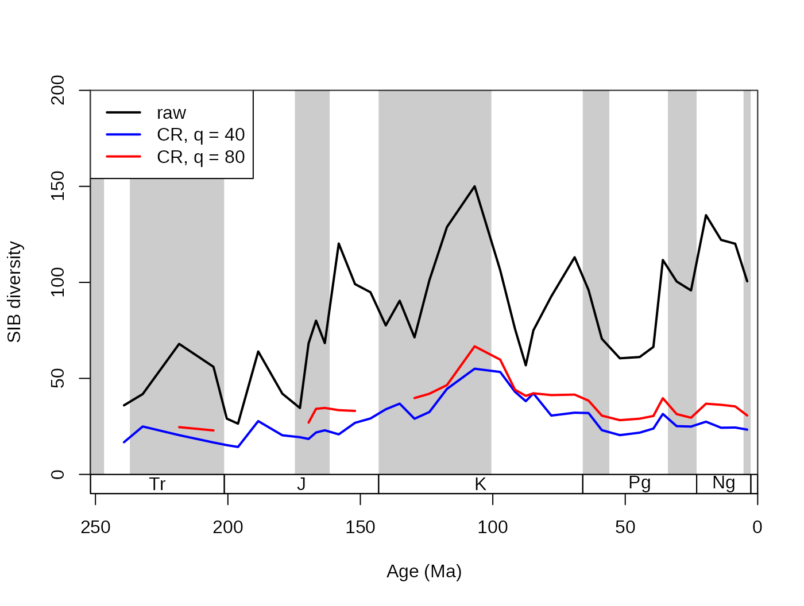
5.2.2. The number of iterations/trials
The precision of the simulations can be chosen by changing the number of iterations the function will run. This can set with the iter argument that has to be a single positive integer. In general, the more iterations, the better the results, but the time the function needs to run has a linear relationship with the iteration number. Most paleontological examples are stable after a couple hundred iterations. However, if the result of the function changes with every run, you will have to increase this number!
# basic plot
tsplot(stages, shading="series", boxes="sys", xlim=52:95,
ylab="genus richness (corrected SIB)", ylim=c(0,200))
lines(stages$mid[1:94], dd$divCSIB, col="black", lwd=2)
## subsampled, stable
subStab <-subsample(fossils, bin="stg", tax="genus", iter=100, q=30)
lines(stages$mid[1:94], subStab$divCSIB, col="blue", lwd=2)
## subsampled, unstable
subInstab <-subsample(fossils, bin="stg", tax="genus", iter=5, q=30)
lines(stages$mid[1:94], subInstab$divCSIB, col="red", lwd=2)
# legend
legend("topleft", legend=c("raw", "CR, q=30, stable",
"CR, q=30, unstable"), col=c("black", "blue", "red"),
lwd=c(2,2,2), bg="white")
In this example, the red line is based on only 5 iterations, while the blue one is based on 100. This typically means that the low iteration number will have similar trajectory to the other series, but will have more volatility due to the random sampling error.
5.2.3. The duplicates argument
In the Paleobiology Database, occurrences are organized in collections, and are recorded as lists of taxa. These entries optimally are on the species-level of taxonomic resolution while most analyses operate at the level of genera. As multiple species can be registered in a single collection, the same genus name can appear multiple time in the collection list. This will have an effect on the occurrence-based subsampling methods. Using the duplicates arguments, you can toggle whether the surplus entries should be omitted (duplicates=FALSE, default) or whether they should be kept (duplicates=TRUE). The omission is applied to the variables defined in tax and coll variables. In case duplicates=FALSE the coll argument is mandatory.
## subsampled, stable
subCRnd <- subsample(fossils, bin="stg", tax="genus",
coll="collection_no", iter=100, q=40, duplicates=FALSE)
# basic plot
tsplot(stages, shading="series", boxes="sys", xlim=52:95,
ylab="number of occurrences", ylim=c(0,100))
lines(stages$mid[1:94], subCR40$divCSIB, col="blue", lwd=2)
lines(stages$mid[1:94], subCRnd$divCSIB, col="black", lwd=2)
legend("topleft", legend=c("CR, q=40 (with duplicates)",
"CR, q=40"), col=c("blue", "black"),
lwd=c(2,2), bg="white")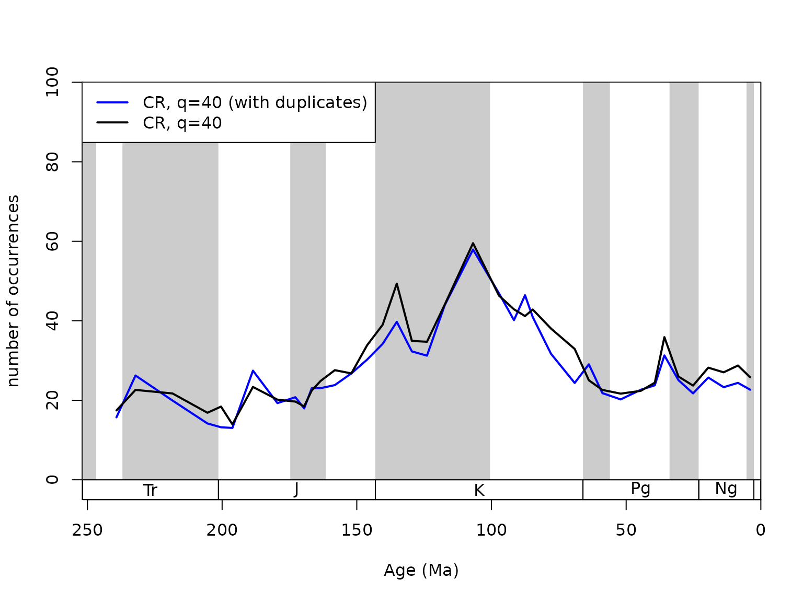 This particular dataset actually contains multiple genus occurrences, so changing this argument to FALSE is justified. However, as it lengthens the function call considerably, the following examples will be based on data that already had this filtering step:
# indicate identical collection/genus combinations
collGenus <- paste(fossils$collection_no, fossils$genus)
# omit the duplicates from the occurrence datasets
fossGen <- fossils[!duplicated(collGenus),]Just remember that this step can be skipped by adding duplicates=FALSE to the subsample() function call.
5.2.4. The useFailed argument
The subsampling level can be set as high as the user wants it to be. Depending on whether the data in the time slices reach the subsampling quota or not, the time slices can be included or excluded from the results. If the useFailed argument is set to FALSE, then the time slices that do not have enough information to reach the subsampling quota will be omitted from the resulting series. This is the default setting, and if the applied function output is a scalar or a vector, then the corresponding results will be omitted. If useFailed=TRUE then the bins where the quota is not reached will be represented in the trial dataset with all their sampled occurrences.
# basic plot
tsplot(stages, shading="series", boxes="sys", xlim=52:95,
ylab="number of occurrences", ylim=c(0,100))
# subsampled, without failed
withoutFail<-subsample(fossGen, bin="stg", tax="genus",
iter=100, q=80, useFailed=FALSE)
lines(stages$mid[1:94], withoutFail$divCSIB, col="black", lwd=2)
# subsampled, with failed
withFail <-subsample(fossGen, bin="stg", tax="genus",
iter=100, q=80, useFailed=TRUE)
lines(stages$mid[1:94], withFail$divCSIB, col="blue", lwd=2)
legend("topleft", legend=c("CR, q=80, without failed",
"CR, q=100, with failed"), col=c("black", "blue"),
lwd=c(2,2), bg="white")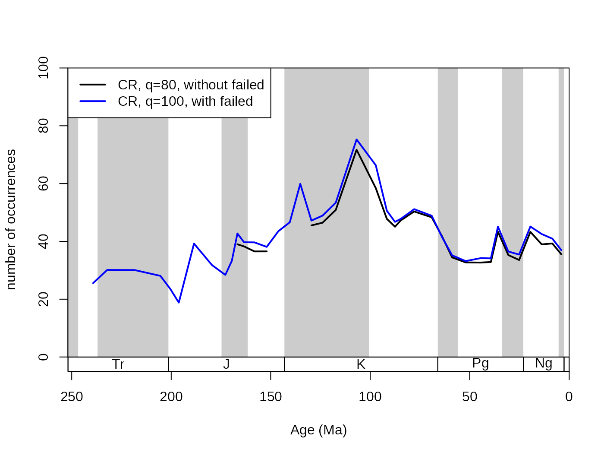
5.2.5. The keep and rem arguments
These arguments handle which bins should be forced to be kept (included) or removed (excluded) from the trial dataset. It accepts a numeric vector, with the bin identifiers. Positive entries mean that the bins will be included in the trial dataset without subsampling. This can be useful if you want the inclusion of recent ‘occurrences’ to demonstrate the ‘Pull of the Recent’ effect. This example uses the original corals dataset to demonstrate how the argument works (with duplicates omitted).
# basic plot
tsplot(stages, shading="series", boxes="sys", xlim=52:95,
ylab="per capita extinction rates", ylim=c(0,1))
## subsampled, excluding the recent occurrences
sub <- subsample(corals, bin="stg", tax="genus", iter=100,
q=50, rem= 95, duplicates=FALSE, coll="collection_no")
lines(stages$mid, sub$extPC, col="black", lwd=2)
## subsampled, including the recent
subPR <- subsample(corals, bin="stg", tax="genus", iter=100,
q=50, keep= 95, duplicates=FALSE, coll="collection_no")
lines(stages$mid, subPR$extPC, col="blue", lwd=2)
# legend
legend("topleft", legend=c("only fossils",
"including the recent\n(not subsampled)"), col=c("black", "blue"),
lwd=c(2,2), bg="white")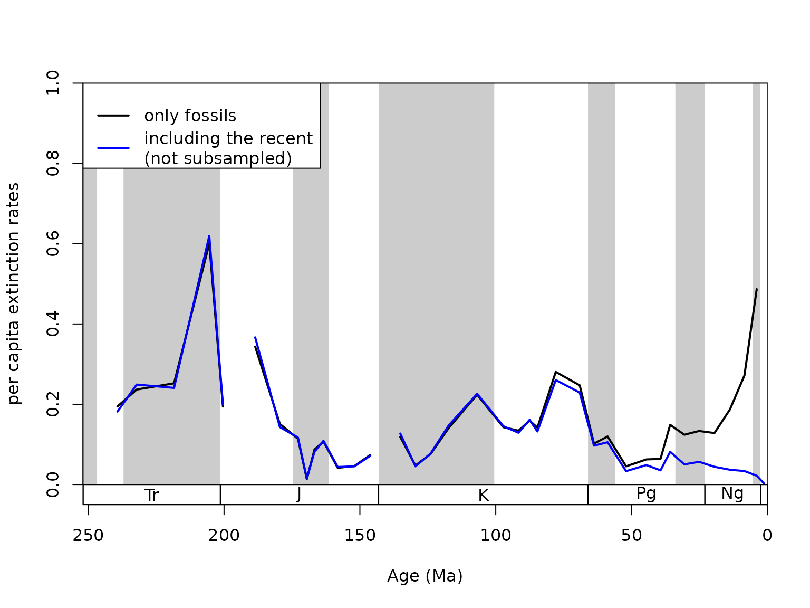
Between these two curves, neither shows perfectly accurate results. The per capita rates employ the range-through assumption. The first results (sub) is biased by edge effects, the closer the end of the time series is, the higher the rate values are due to decreasing total amount of range extensions. The inclusion of entries in the second dataset on the other hand allows the ‘Pull of the Recent’ to depress the extinction rates of the Late Cenozoic.
5.2.6. Subsampling ‘output’ and plotting options
The output type of the subsampling process can be set with the output argument. This should be dependent on the further use of the function results. The most direct output is the arithmetic (default) or geometric means of the trials. They provide almost the same output:
# basic plot
tsplot(stages, shading="series", boxes="sys", xlim=52:95,
ylab="richness of genera (corrected SIB)", ylim=c(0,100))
## arithmetic mean output
subArit <- subsample(fossGen, bin="stg", tax="genus", iter=100, q=40, output="arit")
lines(stages$mid[1:94], subArit$divCSIB, col="black", lwd=2)
## geometric mean output
subGeom <- subsample(fossGen, bin="stg", tax="genus",
iter=100, q=40, output="geom")
lines(stages$mid[1:94], subGeom$divCSIB, col="blue", lwd=2)
legend("topleft", legend=c("arithmetic means", "geometric means"),
col=c("black", "blue"), lwd=c(2,2), bg="white")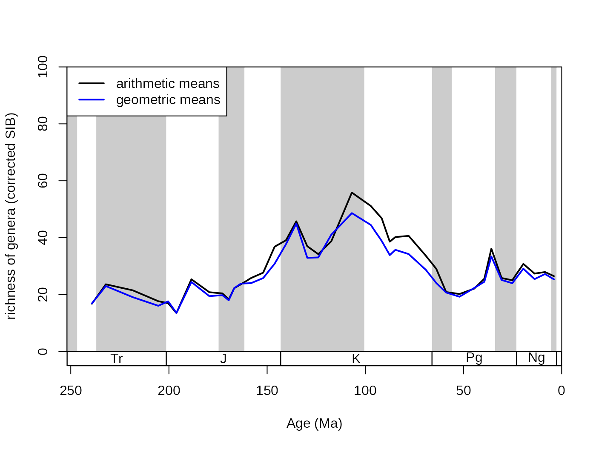
However, the subsampling outputs demonstrate the natural variance arising from the simulating nature of the process. The results of the individual trials can be conserved by setting the output argument to either "dist" or "list". The difference between these two options is that dist groups the results of the trials by the structure of the original function. In the cases when the divDyn() function is the applied function (every example until now), the output is a list, where all variables are matrices.
## subsampled, dist output
subDist <- subsample(fossGen, bin="stg", tax="genus",
iter=100, q=40, output="dist")Rows are time slices, while columns represent the individual trials. These can be visualized by a simple for() loop, and the arithmetic means can be calculated the regular way.
tsplot(stages, shading="series", boxes="sys", xlim=52:95,
ylab="subsampled richness of genera (corrected SIB)", ylim=c(0,150))
plottedVar <- subDist$divCSIB
for(i in 1:ncol(plottedVar)){
lines(stages$mid[1:94], plottedVar[,i], col="#00000099", lwd=2)
}
# the mean
csibMeans<- apply(plottedVar,1, mean, na.rm=T)
lines(stages$mid[1:94], csibMeans , col="red", lwd=2)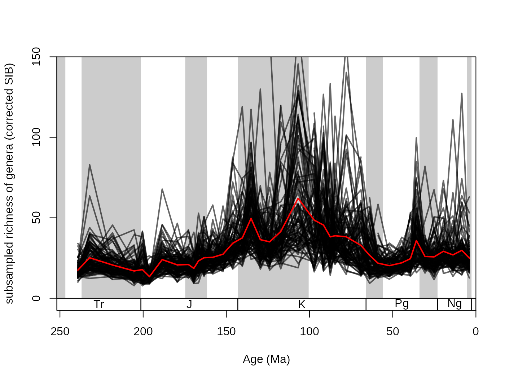
For convenience, this variance can also be plotted with the new shades() function. That will display the distribution of values by drawing transparent polygons. The quantiles of each distribution are calculated, and the same values are then connected (.75 to .75).
tsplot(stages, shading="series", boxes="sys", xlim=52:95,
ylab="subsampled richness of genera (corrected SIB)", ylim=c(0,150))
shades(stages$mid[1:94], plottedVar, res=10, col="black")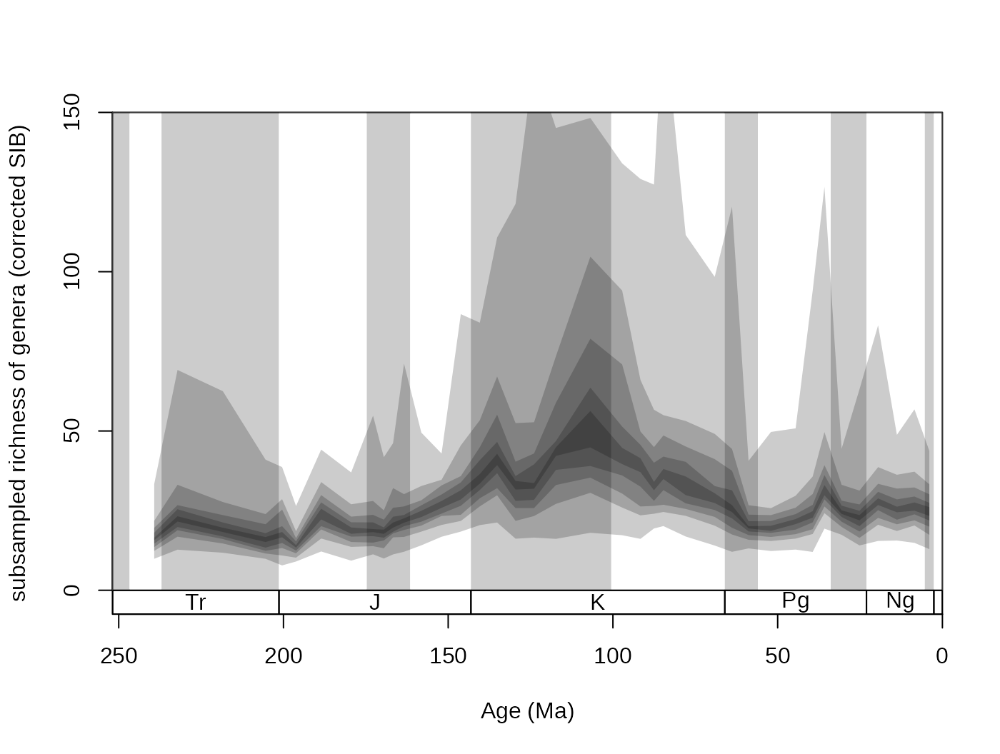
Setting the res argument of this function controls the ‘quantile resolution’. The higher the number, the more refined the transparency gradient will be. However, it is more useful to the enter the exact quantiles to be plotted in the form of a numeric vector:
tsplot(stages, shading="series", boxes="sys", xlim=52:95,
ylab="subsampled richness of genera (corrected SIB)", ylim=c(0,150))
shades(stages$mid[1:94], plottedVar, col="blue", res=c(0.05,0.25,0.75,0.95))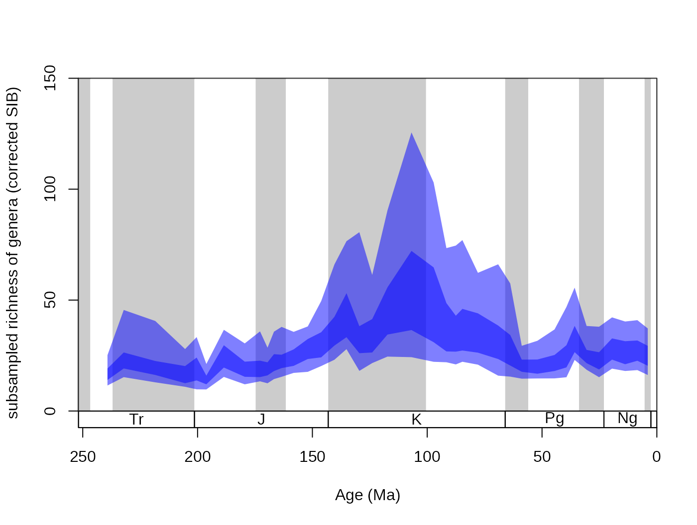
The function’s color argument only accepts colors that are specified without the alpha channel (for instance "#00000066" is impossible, but "blue" or "#4433FF" are perfectly viable).
5.3. The applied function during the subsampling
By default, executing the subsample() command on the occurrence data will run the divDyn() function in every iteration, which is specified by the FUN argument (function f in the notation above). Setting this argument to NULL will not run any function on the subsampled data subset of the trials (trial data). After all iterations are finished, the data subsets will be concatenated and the function will output them as a list of length iter. This option coerces the output type of the function to list, no other output type is possible.
## subsampled
subData <- subsample(fossGen, bin="stg", tax="genus",
iter=100, q=40,FUN= NULL)
# characteristics
class(subData)## [1] "list"
names(subData)## [1] "results" "failed"
length(subData$results)## [1] 100
# columns of the trial dataset
colnames(subData$results[[1]])## [1] "genus" "collection_no" "family" "abund_value"
## [5] "abund_unit" "reference_no" "life_habit" "diet"
## [9] "country" "geoplate" "lat" "lng"
## [13] "paleolat" "paleolng" "period" "epoch"
## [17] "subepoch" "stage" "early_interval" "late_interval"
## [21] "max_ma" "min_ma" "stg" "ten"
## [25] "env" "lith" "latgroup" "bath"
## [29] "gensp" "ecology" "ecologyMostZ" "ecologyMostAZ"
## [33] "ecologyBoth" "growth" "integration" "mid"
## [37] "stgMid" "mid_ma" "slc"The advantage of this option is that you can inspect the results of the subsampling output. You can also iterate a custom function on this output by using the lapply() interator in base R. The results of the function will be output as a list.
5.3.1. Example 1: Checking the number of occurrences
One of the functions we can check is the number of occurrences in the ‘trial datasets’. By the rules of CR, this should be exactly q:
OCC <- function(x) table(x$stg)
# list of trials, each contains the number of occurrences in a bin (vector)
subOccs <- lapply(subData$results, OCC)
# one trial
subOccs [[1]]##
## 54 55 56 57 58 59 60 61 62 63 64 65 66 67 68 69 70 71 72 73 74 75 76 77 78 79
## 40 40 40 40 40 40 40 40 40 40 40 40 40 40 40 40 40 40 40 40 40 40 40 40 40 40
## 80 81 82 83 84 85 86 87 88 89 90 91 92 93 94
## 40 40 40 40 40 40 40 40 40 40 40 40 40 40 40Extracting the central tendency (average of the trials) is more difficult this way, but some output structures (e.g. geographic shapes) might require special treatment that can be written as a custom function. Anyway, subsample() allows the simplification of this process, if you set the output argument to ‘list’ and by providing the custom function as the FUN argument. One rule is that the function must take the occurrence dataset as an argument, which is formally called x:
OCC <- function(x) table(x$stg)
subOccsInternal <- subsample(fossGen, bin="stg", tax="genus",
iter=100, q=40,FUN= OCC, output="list")
subOccsInternal$results[[1]]##
## 54 55 56 57 58 59 60 61 62 63 64 65 66 67 68 69 70 71 72 73 74 75 76 77 78 79
## 40 40 40 40 40 40 40 40 40 40 40 40 40 40 40 40 40 40 40 40 40 40 40 40 40 40
## 80 81 82 83 84 85 86 87 88 89 90 91 92 93 94
## 40 40 40 40 40 40 40 40 40 40 40 40 40 40 40Whether averaging is possible will be dependent on the output of the applied function. If the output of the vector is scalar, then the output methods "arit" and "geom" will return a scalar, and "dist" will return a vector. If the output of the function is a vector, both "arit" and "geom" will return a single vector, and "dist" will return a matrix. If the result of the applied function is a data.frame, then the result of "arit" and "geom" will be a data.frame (from the result) too. In this case, if the output is "dist", then the output of the subsample function will be a list, each of its elements representing one of the variables in the output of the applied function, but instead of containing vectors, they will contain matrices. This is the case for the divDyn() function. Running the function OCC() above with the "dist" type output will produce a matrix of occurrences:
subDistOccs <- subsample(fossGen, bin="stg", tax="genus",
iter=100, q=40,FUN= OCC, output="dist")
str(subDistOccs)## int [1:41, 1:100] 40 40 40 40 40 40 40 40 40 40 ...
## - attr(*, "dimnames")=List of 2
## ..$ : chr [1:41] "54" "55" "56" "57" ...
## ..$ : NULLNote the dimensions of the matrix, which is 41 times 100, the number of sampled time slices and the number of subsampling trials. CAUTION: The averaging and the grouping of the resulting variables is possible because the applied function is run on the total dataset first, which will result in a container prototype that is used to store the trial results. If the function output structure (i.e. dimensions) is different when it is run for the subsets than when it is run on the total dataset, the subsample function will output an error.
5.3.2. Example 2: maximum absolute paleolatitudes
Let’s say you are interested in the maximum absolute paleolatitude of the occurrences. This will be influenced by the number of occurrences, and should therefore be rechecked with subsampling. You can calculate this in the raw dataset with the following function, using the known variable names:
PL <- function(x){
tRes<- tapply(INDEX=x$stg, X=x$paleolat, FUN=function(y){
max(abs(y), na.rm=T)
})
return(tRes)
}
maxPaLat<- PL(fossils)This variable certainly increases with age,
cor.test(maxPaLat, stages$mid[54:94], method="spearman")##
## Spearman's rank correlation rho
##
## data: maxPaLat and stages$mid[54:94]
## S = 18336, p-value = 5.307e-05
## alternative hypothesis: true rho is not equal to 0
## sample estimates:
## rho
## -0.5972125but it is questionable at this point, whether the increasing number of occurrences is responsible for this pattern, or whether you would still see it, if the same number of occurrences were sampled from each time slice. You can quickly check this association at 20 occurrences and CR by running:
subMaxPaLat <- subsample(fossGen, bin="stg", tax="genus",
iter=100, q=20,FUN=PL)
tsplot(stages, shading="series", boxes="sys", xlim=52:95,
ylab="maximum sampled paleolatitude", ylim=c(0,90))
lines(stages$mid[54:94], maxPaLat, col="blue")
lines(stages$mid[54:94], subMaxPaLat, col="black")
# legend
legend("topleft", legend=c("max",
"subsampled max"), col=c("blue","black"),
bg="white", lty=c(1,1))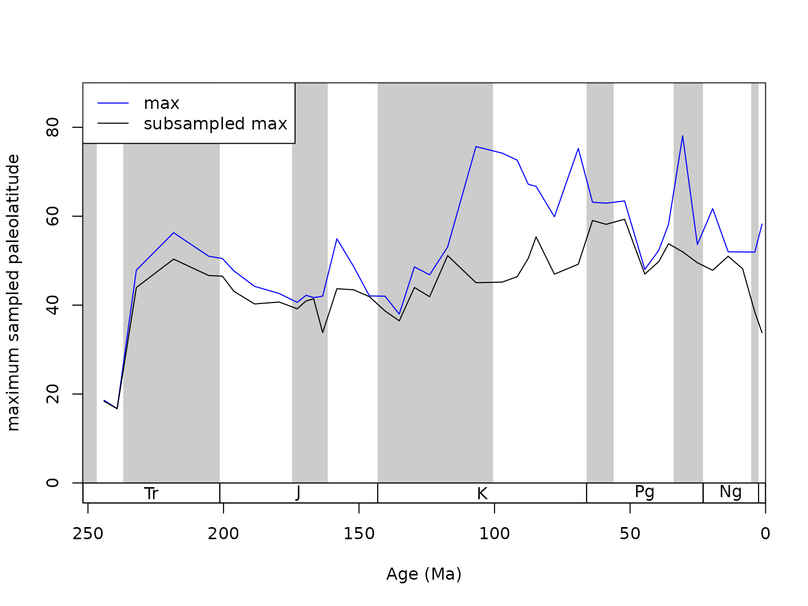
cor.test(subMaxPaLat, stages$mid[54:94], method="spearman")5.4. Different subsampling types
5.4.1. Classical Rarefaction (CR)
Classical Rarefaction is the most straightforward subsampling method. It is based on the assumption that the number of occurrences is a direct proxy for sampling intensity. Although this assumption can be criticized (see below), the general applicability of the method, and straightforward interpretation of the results makes it especially useful for checking the distorting effects of sampling. The arguments of the subsampling types are summarized at the help page of the subsampling trial functions (5.4.4.). The traditional classical rarefaction procedure was expanded to perform unit-based subsampling. In all cases above, CR used the number of rows within a bin as the units of the subsampling procedure which is set by the default argument unit=NULL. However, the calculation can also be run with multiple rows describing one unit (list) of the subsampling that is indicated by another variable. This way you can rarefy the data to a certain number of collections (UW subsampling, see below), references or whatever, while the all rows forming the units remain intact.
subUWunit <- subsample(fossGen, bin="stg", tax="genus",
iter=100, q=10, type="cr", unit="collection_no")5.4.2. Occurrence-weighted by-list subsampling (OxW)
By-list subsampling methods use information about how the occurrences are clustered in lists. In the PaleoDB, these clusters are the collections that ‘contain’ the occurrences, which are direct products of sampling. Depending on whether we would like to emphasize the sampling of collections (related to beta diversity) or the number of entries in lists, you can use the OxW group of subsampling (Alroy et al., 2001). Since the development of SQS (or CBR, see below) these methods have not been widely applied, but nevertheless, they could be useful in some projects. The basis of these methods is that collection integrity cannot be broken during the subsampling procedure. Entire lists are drawn from the subsampling pool of each time bin, while the number of occurrences are tracked. These lists are the collections that should be indicated by setting the coll variable appropriately. When the quota is reached, no more occurrences are drawn. The rest of the process (assembly of the trial dataset, running the applied function) is the same as with the CR method.
subOW <- subsample(fossGen, bin="stg", tax="genus", coll="collection_no",
iter=100, q=40, type="oxw")The output of the occurrence-weighted (OW) type is typically very close to the output of the corresponding level CR results:
subCR <- subsample(fossGen, bin="stg", tax="genus", iter=100, q=40)
tsplot(stages, shading="series", boxes="sys", xlim=52:95,
ylab="corrected SIB diversity", ylim=c(0,90))
lines(stages$mid[1:94], subCR$divCSIB, col="black")
lines(stages$mid[1:94], subOW$divCSIB, col="blue")
legend("topleft", legend=c("CR - 40", "OW - 40"),
col=c("black", "blue"), lwd=c(2,2), bg="white")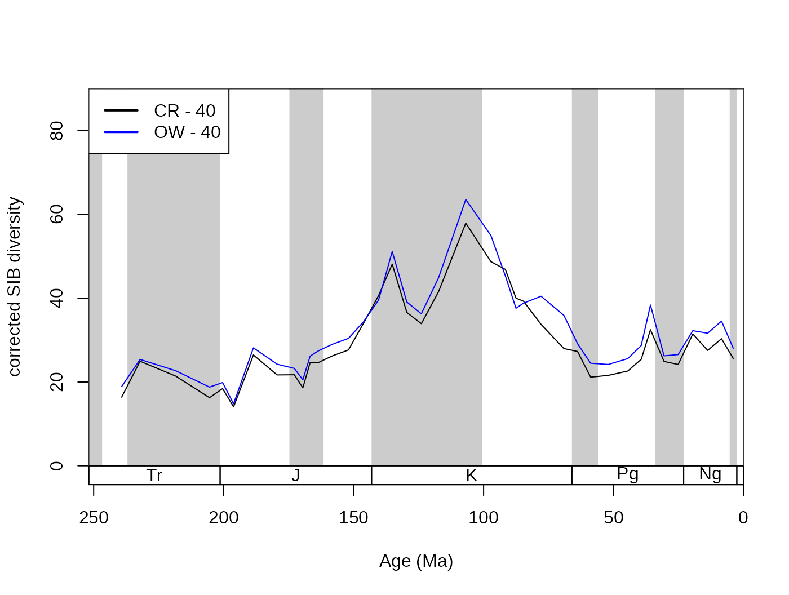
The reason why the method type is called the OxW is because, depending on the relative importance of the collections and the entries within the collection, lists express different aspects of sampling. This can be taken into consideration with the exponentiation of the occurrence counts in each collection. In these procedures, the number of occurrences in each collection will be raised to the power of xexp and the sum of the resulting values will be compared to the set subsampling quota. The simplest way of doing this is to raise the number of occurrences in a collection to the power of 0, which effectively means the selection of a certain number of collections in all different time slices (no matter how many occurrences there are in a collection it will be 1 if raised to the power of 0). Setting the xexp argument to 0, will force this setting. This is sometimes referred to as the ‘unweighted subsampling’ method, which effectively means to subsample the data to a certain number of collections in a bin. In this case the q argument will represent the quota of collections.
trialsUW <- subsample(fossGen, bin="stg", tax="genus", coll="collection_no",
iter=100, q=20, type="oxw", xexp=0, FUN=binstat)
# the number of sampled collections on average in each timeslice
trialsUW[54:94, "colls"]
subUW <- subsample(fossGen, bin="stg", tax="genus", coll="collection_no",
iter=100, q=10, type="oxw", xexp=0)By this principle, it is not difficult to see that depending on the size of the collections, the actual number of occurrences will be somewhat higher than the quota. You can quickly check the exact number of occurrences drawn with the binstat() function
subST <- subsample(fossGen, bin="stg", tax="genus", coll="collection_no",
iter=100, q=20,FUN=binstat, type="oxw")
subST[54:94, "occs"]## [1] 22.81 22.52 24.96 23.73 26.13 23.85 21.68 24.36 21.98 24.29 22.90 25.40
## [13] 23.19 25.71 26.69 32.20 24.26 25.40 25.79 28.01 28.56 26.67 26.81 22.91
## [25] 26.70 26.20 24.53 23.96 22.89 23.34 22.57 23.83 22.73 27.22 26.38 26.59
## [37] 26.48 24.21 24.46 26.06 24.84Although there are ways to improve the accuracy of the subsampling process, the variation induced by this problem is only minuscule compared to those introduced by sampling and binning uncertainties. However, typically this xexp value is set to a value between 1 and 2 (e.g. 1.4). In these cases, you have to calculate the intensity of sampling . Although there is some discrepancy between the methods, the overall trajectories are quite similar.
subO2W <- subsample(fossGen, bin="stg", tax="genus", coll="collection_no",
iter=100, q=80, type="oxw", xexp=2)
tsplot(stages, shading="series", boxes="sys", xlim=52:95,
ylab="corrected SIB genus richness", ylim=c(0,90))
lines(stages$mid[1:94], subCR$divCSIB, col="black")
lines(stages$mid[1:94], subOW$divCSIB, col="blue")
lines(stages$mid[1:94], subUW$divCSIB, col="red")
lines(stages$mid[1:94], subO2W$divCSIB, col="green")
legend("topleft", legend=c("CR - 40", "OW - 40", "UW - 10", "O2W - 80"),
col=c("black", "blue", "red", "green"), lwd=c(2,2), bg="white")
5.4.3. Shareholder Quorum Subsampling (SQS)
As intuitive as the CR approach is to understand, the method has been criticized for being ‘unfair’ (Alroy, 2010). The results of CR will not reflect changes of richness appropriately, if two localities with different diversities are compared and their total richnesses are not equal. This can be visualized by progressively lowering the subsampling quota for CR, which will result in not just decreased levels of richness but also in a pronounced decrease in variance (Alroy, 2010b). This effect can be illustrated by rerunning CR iteratively with progressively lower quotas.
# repeat CR subsampling for a set of quotas
quotas<-seq(70,10,-10)
for(i in quotas){
# actual CR
cr<-subsample(fossGen, iter=50, q=i,tax="genus", bin="stg",
useFailed=FALSE)
# store output
assign(paste("cr", i, sep=""), cr)
}The code above reruns the CR algorithm on the dataset with 70, 60, 50 … and 10 occurrences as the quota of the subsampling. Then the results can be plotted with:
tsplot(stages, shading="series", boxes="sys", xlim=52:95,
ylab="corrected SIB richness", ylim=c(0,90))
for(i in quotas){
current <- get(paste("cr", i, sep=""))
lines(stages$mid[1:94], current $divCSIB, col="red")
}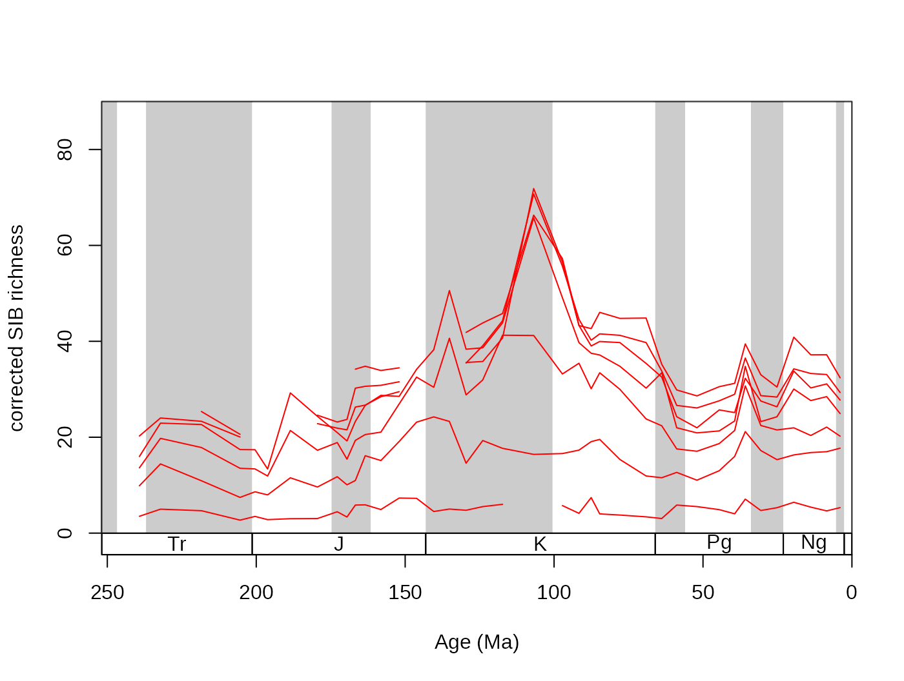
As the subsampling quota decreases, so does the mean value of richness, and also the relative deviation of the series. The Shareholder Quorum subsampling approach (Alroy, 2010) effectively circumvents this problem by using a different proxy for sampling completeness, other than the number of occurrences. Rather than looking at the basic unary information of occurrences, the SQS method assesses sampling with frequency coverage. Coverage is an intuitive way to express the completeness of sampling. In the species sampling pool all species have a frequency (Fk) that sum up to 1. In this sense, the coverage of a sample is the sum of species frequencies in the original sampling pool (Fk), but only for those species that actually have been sampled. This rule effectively coerces sampling coverage between 0 and 1. Different levels of sampling can be created by maximizing the desired coverage of a sample. This desired coverage is referred to as the ‘quorum’. After the work of Chao and Jost (2012), ecologists usually refer to this approach as coverage-based rarefaction.
5.4.3.1. The ‘inexact’ approach to SQS
The original description of the SQS algorithm ensured different levels of coverages by going through the occurrences (or collections) randomly and aggregating the estimated frequencies of the species that are taken from the sample until this sum reached the subsampling quorum. John Alroy (2014) referred to this approach as the ‘inexact’ method to perform SQS. This is the default way to do SQS.
# sqs with 0.6 quorum
sqs0.6 <-subsample(fossGen, iter=50, q=0.6,
tax="genus", bin="stg", type="sqs")
#sqs with 0.3 quorum
sqs0.3 <-subsample(fossGen, iter=50, q=0.3,
tax="genus", bin="stg", type="sqs")
# plotting
tsplot(stages, shading="series", boxes="sys", xlim=52:95,
ylab="corrected SIB richness", ylim=c(0,175))
lines(stages$mid[1:94], sqs0.6$divCSIB, col="blue")
lines(stages$mid[1:94], sqs0.3$divCSIB, col="green")
lines(stages$mid[1:94], dd$divCSIB, col="black")
legend("topleft", legend=c("raw", "SQS, q=0.6", "SQS, q=0.3"),
col=c("black", "blue", "green"), lwd=c(2,2,2), bg="white")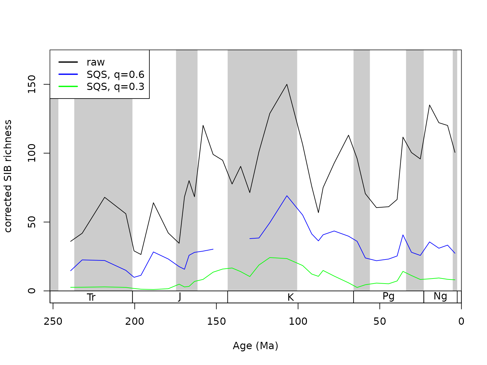 This procedure is dependent on the proper estimation of the species’ frequencies in the sampling pool (?frequencies). Alroy (2010) suggested that the observed frequencies should be adjusted with Good’s total sample coverage estimator u, which is dependent on the number of occurrences (o) and the number of single-collection (single-occurrence) taxa (1O ).
\[u = 1 - {1}O/o\]
This is the first correction of Alroy (2010, for overall coverage). He also suggested that for Paleobiology Database occurrences, a different version of this estimator (u’) might be more accurate that is estimated using the single reference taxa, instead of single-collection taxa. This estimator is then used to estimate the true frequencies of species. You can choose between these versions by toggling the singleton argument between "occ" (default), "ref" and it can be switched off by setting it to FALSE. Note that "ref" will require you to provide a reference variable (ref argument). The discrepancy between the methods is very small:
sqsCollSing <-subsample(fossGen, iter=50, q=0.4,
tax="genus", bin="stg", type="sqs",
singleton="occ")
sqsRefSing <-subsample(fossGen, iter=50, q=0.4,
tax="genus", bin="stg", type="sqs", ref="reference_no",
singleton="ref")
sqsNoSing <-subsample(fossGen, iter=50, q=0.4,
tax="genus", bin="stg", type="sqs", singleton=FALSE)
# plotting
tsplot(stages, shading="series", boxes="sys", xlim=52:95,
ylab="corrected SIB richness", ylim=c(0,100))
lines(stages$mid[1:94], sqsRefSing$divCSIB, col="blue")
lines(stages$mid[1:94], sqsCollSing$divCSIB, col="black")
lines(stages$mid[1:94], sqsNoSing$divCSIB, col="red")
legend("topleft", legend=c("SQS, q=0.4", "SQS, q=0.4, ref", "SQS, q=0.4, occ"),
col=c("black", "blue", "red"), lwd=c(2,2,2), bg="white")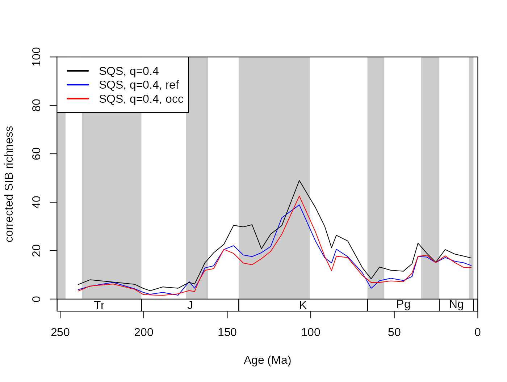 Alroy (2010) also mentioned two additional corrections (for Evenness and Dominance and Single large collections) that also have minor effects on the overall results. You can use the excludeDominant and largestColl arguments to turn these on. Note that you have to provide a collection variable to make largestColl work, which is only available if excludeDominant=TRUE.
sqsPure <-subsample(fossGen, iter=50, q=0.5,
tax="genus", bin="stg", type="sqs")
sqsCorr <-subsample(fossGen, iter=50, q=0.5,
tax="genus", bin="stg", ref="reference_no",coll="collection_no",
type="sqs", singleton="ref", excludeDominant=T, largestColl=T)
# plotting
tsplot(stages, shading="series", boxes="sys", xlim=52:95,
ylab="corrected SIB richness", ylim=c(0,100))
lines(stages$mid[1:94], sqsPure$divCSIB, col="blue")
lines(stages$mid[1:94], sqsCorr$divCSIB, col="black")
legend("topleft", legend=c("uncorrected SQS",
"corrected SQS"), col=c("blue", "black"),
lwd=c(2,2), bg="white")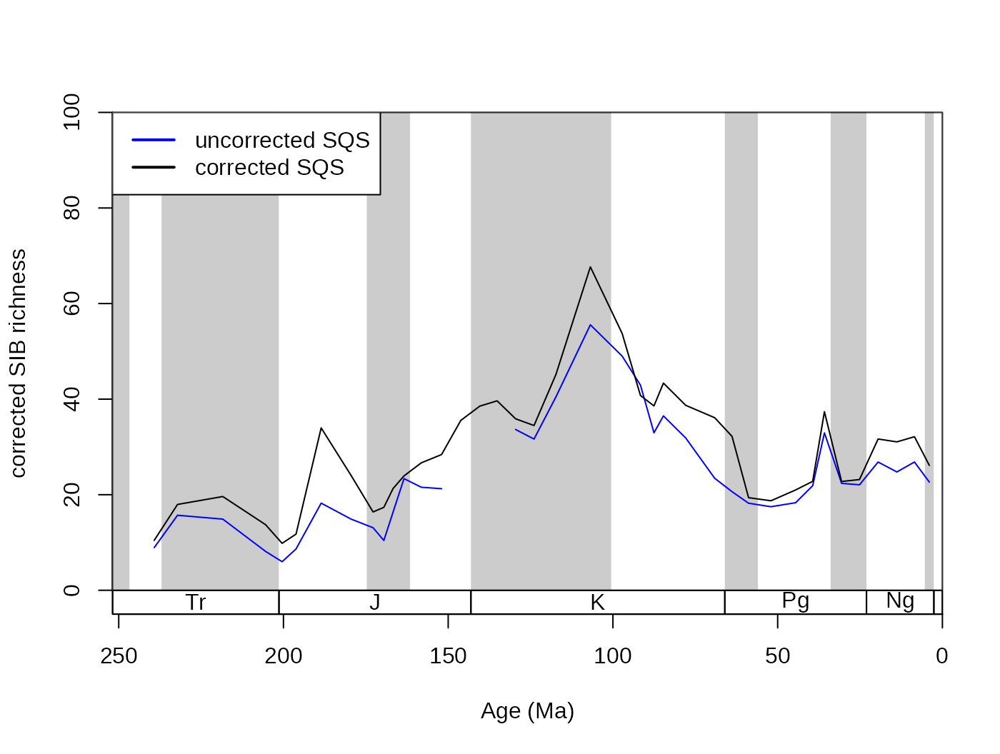
So far, these calculations were based on occurrence-based rarefaction, but SQS can be calculated similarly to OW, by tallying the occurrences collection-by-collection. This can be enforced with the byList=TRUE option.
sqsByColl <-subsample(fossGen, iter=50, q=0.5,
tax="genus", bin="stg", ref="reference_no",coll="collection_no",
type="sqs", singleton="ref", excludeDominant=T, largestColl=T, byList=TRUE)
# plotting
tsplot(stages, shading="series", boxes="sys", xlim=52:95,
ylab="corrected SIB richness", ylim=c(0,100))
lines(stages$mid[1:94], sqsByColl$divCSIB, col="blue")
lines(stages$mid[1:94], sqsCorr$divCSIB, col="black")
legend("topleft", legend=c("by-list SQS",
"by-occurrence SQS"), col=c("blue", "black"),
lwd=c(2,2), bg="white")
5.4.3.2. Concluding remarks on SQS
SQS is probably the most appropriate method we have today for sampling standardization of diversity curves. Although the number of potential influencing factors is high, they do not influence the overall trajectory of the curves, and the induced variation is almost equal to the variability that is created by subsampling itself (plot some results with output="dist"). The systematical evaluation of these options is still lacking, but we are working on the appropriate testing framework.
5.4.4. Subsampling trial functions
The different subsampling types can be contrasted by comparing the subsampling trial functions (subtrialCR(), subtrialOXW() and subtrialSQS()).The procedures are of these functions are also implemented within the subsample() function, and they can be used to produce one ‘trial dataset’ from the total sampled data. The output of these function is a logical vector indicating the rows of the data that should be present in one particular trial dataset. Future versions of the package will allow the writing and application of custom subsampling trial functions, with which the subsample() function will be entirely customizable.
6. Taxon-specific characteristics
6.1. Environmental affinities
Most taxa prefer certain environments. Our understanding of environmental affinities of different taxa depend on the characteristics of sampling. In some questions the definition of two contrasting environments suffices, and most hypotheses can be tested with univariate statistics between two samples. Using the most basic logic, one could infer that a taxon preferred environment A to environment B, all other things being equal, if it occurs more in that particular environment over its lifetime. This is sometimes referred to as the majority rule of affinity, and is very straightforward to implement. In our test example, a number of variables are added based on the raw data, which express the environmental conditions of the dataset. For the sake of demonstration, the bathymetric affinities bath will be calculated. First, we have to omit those occurrences that have unknown depth conditions.
knownBath <- fossils[fossils$bath!="uk",]6.1.1. Majority rule
After this simple filtering, the affinity() function can be applied to the dataset, with specifying the usual arguments, plus the "majority" method. The function also needs to be notified about the column (its name. env="bath" in our case) that contains the binary environmental variable in question:
affMajor <- affinity(knownBath, bin="stg", tax="genus",
method="majority", coll="collection_no", env="bath")
table(affMajor)## affMajor
## deep shal
## 25 693The output of this function is a single character vector, values specifying the apparently preferred environments and the names attribute defining the taxon names. NA entries occur when the function is unable to define an affinity (i.e. the number of occurrences from both environments is the same). It is not mandatory to provide collection identifiers (coll). If these are given, then the multiple occurrences of a taxon within a collection (sample) will be treated as one. As you can see, an overwhelming majority of the taxa have shallow affinities based on this method, but this is not surprising, as most of the occurrences come from shallow environments.
table(knownBath$bath)##
## deep shal
## 1035 256446.1.2. Binomial method
If sampling is so dominated by shallow occurrences, then the obvious question that arises is whether the apparent pattern of affinity only is present because this biased sampling. In order to correct for this ‘background’ sampling issue, Foote (2006) suggested that the environment affinity should be determined by comparing the taxon’s observed pattern of occurrences to that present in the total dataset (null sampling probability of the environment). This approach was also used by Kiessling and Aberhan (2007) and Kiessling and Kocsis (2015) in later studies. The sampling probability of the environment is calculated by taking the proportion of occurrences in the two environments in the total dataset from the range of the taxon. Under random sampling conditions, the number of total occurrences and the number among these that come from an environment is modelled by a binomial distribution. Given a certain level of confidence one can guess whether the sampled occurrences of a taxon represent a significantly higher or lower proportion than predicted by the null probability. The more likely it is that a simple binomial model can produce the observed success/total trial ratio, the less we know about the affinity of the taxon. This approach is implemented by the default "binom" method.
affBin1 <- affinity(knownBath, bin="stg", tax="genus",
method="binom", coll="collection_no", env="bath")
table(affBin1)## affBin1
## deep shal
## 135 574The significance of the binomial tests can be chosen by the alpha argument that toggles the breadth of proportions that is considered to be output by the randomness of sampling. The default alpha = 1 setting (above) will not perform the binomial test. It will only compare the taxon’s observed proportion of occurrences from the different environments to those observed in the total dataset. The lower this alpha value is, the less taxa will get an assigned affinity.
affBin0.5 <- affinity(knownBath, bin="stg", tax="genus",
method="binom", coll="collection_no", env="bath", alpha=0.5)
table(affBin0.5)## affBin0.5
## deep shal
## 127 149
affBin0.1 <- affinity(knownBath, bin="stg", tax="genus",
method="binom", coll="collection_no", env="bath", alpha=0.1)
table(affBin0.1)## affBin0.1
## deep shal
## 77 56Using the standard 95% percent as alpha level is an arbitrary choice. As the fossil record has quality issues, a 90% confidence (alpha = 0.1) is preferred in most cases. It is also possible to do the calculations based on the collection counts, instead of the number of occurrences. For these the argument bycoll has to be set to TRUE.
6.2. Changing characteristics
The entire occurrence dataset can be subdivided into time-bin and taxon-specific subsets. We can use each of these subsets to describe the taxa’s ecological characteristics if we assert that these occurrences are contemporaneous.
6.2.1. Geographic range
One of the most ecologically relevant characteristics of a taxon is its total geographic range, which can be calculated with the georanges() function, using a number of methods. These rely on the geographic coordinates of the occurrences, which are in this case reconstructed internally by the Paleobiology Database (with GPlates). This function is applicable to time-slice-specific subset of a single taxon, such as the Pleistocene occurrences of the genus Acropora
oneTax <- corals[corals$stg==94 & corals$genus=="Acropora",]
georange(oneTax, lat="paleolat", lng="paleolng", method="co")## co
## 213This function call outputs coordinate occupancy, the number of unique pairs of coordinates the taxon has. Besides this very simple one, multiple additional methods are available by calling functions from the icosa and vegan packages. You can inspect these with ?georange.
6.2.2. The tabinate() iterator function
For large-scale analyses of taxa, it is desirable to apply the function above to all time-bin/taxon specific subsets of the data. This can be desired for numerous calculations that use contemporaneous occurrences of a taxon as input, which can be iterated for every time-bin/taxon subset with the tabinate() function. To use this function you have to provide the taxon and time bin identifiers (tax and bin, respectively), and the function (FUN) that needs to be iterated on every taxon/time-bin subset of the dataset. This function has to take x as the primary argument (the database subset), but additional arguments will be passed to it.
For instance, if you are interested in the number of collections each taxon has in each time slice, instead of using a combination of functions (subset(), unique() and table()) you can define a function, which can be iterated on all subsets.
collCount <- function(x) length(unique(x$collection_no))
allGeo <- tabinate(corals, bin="stg", tax="genus", FUN=collCount)This is a somewhat slower solution, but its utility is evident when more complicated functions are passed to the iterator, such the georanges() presented before.
allGeo <- tabinate(corals, bin="stg", tax="genus",
FUN=georange, lat="paleolat", lng="paleolng", method="co")The tabinate() function currently accepts functions that output single values or vectors as output, but its applicability will be increased in the future.
Acknowledgements
The development of the package began in the context of a project on global paleobiogeography funded by the Deutsche Forschungsgemeinschaft (DFG project numbers Ko 5382/1-1, Ko 5382/1-2, Ki 806/16-1). The package is also part of the DFG Research Unit 2332: TERSANE (TEmperature Related Stressors in ANcient Extinctions). We are thankful to all testers of the package including Emilia Jarochowska, Vanessa Roden, Andreas Lauchstedt, Gwen Antell and Roger Benson for suggestions, and all participants of the first year International Master’s Programme for Paleobiology at the GeoZentrum Nordbayern, FAU in Erlangen, Germany. We also thank all enterers of the Paleobiology Database.
References
Alroy, J. (2008). Dynamics of origination and extinction in the marine fossil record. Proceedings of the National Academy of Science, 105, 11536–11542.
Alroy, J., Marshall, C. R., Bambach, R. K., Bezusko, K., Foote, M., Fürsich, F. T., … Webber, A. (2001). Effects of sampling standardization on estimates of Phanerozoic marine diversification. Proceedings of the National Academy of Science, 98(11), 6261–6266. https://doi.org/10.1073/pnas.111144698
Alroy, J., Aberhan, M., Bottjer, D. J., Foote, M., Fürsich, F. T., Harries, P. J., … Visaggi, C. C. (2008). Phanerozoic Trends in the Global Diversity of Marine Invertebrates. Science, 321(5885), 97–100. https://doi.org/10.1126/science.1156963
Alroy, J. (2010). The Shifting Balance of Diversity Among Major Marine Animal Groups. Science, 329, 1191–1194. https://doi.org/10.1126/science.1189910
Alroy, J. (2010b). Geographical, environmental and intrinsic biotic controls on Phanerozoic marine diversification. Palaeontology 53:1211-1235.https://doi.org/10.1111/j.1475-4983.2010.01011.x
Alroy, J. (2014). Accurate and precise estimates of origination and extinction rates. Paleobiology, 40(3), 374–397. https://doi.org/10.1666/13036
Alroy, J. (2015). A more precise speciation and extinction rate estimator. Paleobiology, 41(04), 633–639. https://doi.org/10.1017/pab.2015.26
Bell, M. A. (2015). geoscale: Geological Time Scale Plotting. R package version 2.0. Retrieved from http://CRAN.R-project.org/package=geoscale
Foote, M., & Raup, D. M. (1996). Fossil Preservation and the Stratigraphic Ranges of Taxa. Paleobiology, 22(2), 121–140.
Chao, A., & Jost, L. (2012). Coverage-based rarefaction and extrapolation: standardizing samples by completeness rather than size. Ecology, 93(12), 2533–2547. https://doi.org/10.1890/11-1952.1
Foote, M. (1999). Morphological Diversity In The Evolutionary Radiation Of Paleozoic and Post-Paleozoic Crinoids. Paleobiology, 25(S2), 1–115.
Foote, M. (2000). Origination and Extinction Components of Taxonomic Diversity: General Problems. Paleobiology, 26(4), 74–102.
Foote, M. (2006). Substrate Affinity and Diversity Dynamics of Paleozoic Marine Animals. Paleobiology, 32(3), 345–366. https://doi.org/10.2307/4096955
Good, I. J. (1953). The Popoulation Frequencies of Species and the Estimation of Population Parameters. Biometrika, 40(3/4), 237–264.
Gradstein, F. M., Ogg, J. G., & Schmitz, M. D. (2020). The geologic time scale 2020. Elsevier.
Kiessling, W., & Aberhan, M. (2007). Environmental determinants of marine benthic biodiversity dynamics through Triassic-Jurassic time. Paleobiology, 33(3), 414–434.
Kiessling, W., & Kocsis, A. T. (2015). Biodiversity dynamics and environmental occupancy of fossil azooxanthellate and zooxanthellate scleractinian corals. Paleobiology, 41(3), 402–414.
Kiessling, W., & Simpson, C. (2011). On the potential for ocean acidification to be a general cause of ancient reef crises. Global Change Biology, 17, 56–67. https://doi.org/10.1111/j.1365-2486.2010.02204.x
Kocsis, A. T., Reddin, C. J., Alroy, J. and Kiessling, W. (2019). The R package divDyn for quantifying diversity dynamics using fossil sampling data. Methods in Ecology and Evolution. https://doi.org/10.1111/2041-210X.13161
Raup, D. M. (1975). Taxonomic Diversity Estimation Using Rarefaction. Paleobiology, 1, 333–342. https://doi.org/10.2307/2400135
Raup, D. M. (1979). Biases in the fossil record of species and genera. Bulletin of the Carnegie Museum of Natural History, 13, 85-91.
Raup, D. M. (1985). Mathematical Models of Cladogenesis. Paleobiology, 11(1), 42–52.
Sepkoski Jr, J. J. (2002). A compendium of fossil marine animal genera. Bulletins of American Paleontology, 363, 1-560.